Exam Practice — All Four Questions, 6 Past Papers
Questions 1–4 (magnetic circuits, transformers, induction motors, DC machines) from every paper 2023-2024 through 2025-2026, worked step by step and independently double-checked · 24 questions, 41 worked entries
Each question below is solved the same way as the weekly tutorials: what the question is really asking, the steps to work it out, the formulas with every variable explained, and a short "notes to write down" summary. Two things are different here versus the weekly tutorials, worth knowing before you rely on these: first, these are the actual past exam papers, which come with no printed answer key at all (unlike the tutorial questions) — every number below was derived from scratch and cross-checked by an independent recomputation (usually via a second, differently-ordered calculation path, done numerically in Python), rather than checked against a given answer. Second, every paper on this module follows the same 4-question template — Q1 magnetic circuits, Q2 transformers, Q3 induction motors, Q4 DC machines —. All four questions are covered here: Q1–Q2 link back to Weeks 1–7, Q3 links to the AC Machines page and Q4 to the DC Machines page. Every question also has a scan of the original printed question, so you can save it into your note-taking app.
📄 Paper 1 — 2023-2024 Semester 1
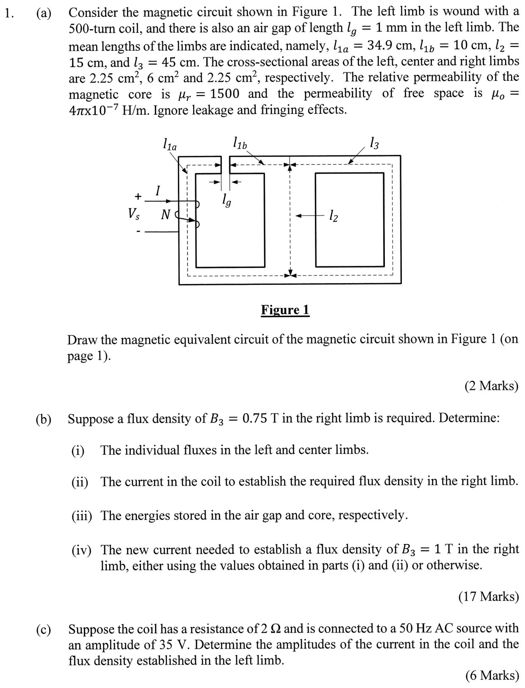
Question: A 3-limb core has a 500-turn coil AND a 1mm air gap both on the left limb (split into two core segments, l₁ₐ=34.9cm and l₁ᵦ=10cm, around the gap). The center limb (l₂=15cm, A=6cm²) and right limb (l₃=45cm, A=2.25cm²) are unbroken. Left limb area is 2.25cm² throughout, μᵣ=1500. (a) Draw the equivalent circuit. Given a target flux density of B₃=0.75T in the right limb: find the fluxes in the left and center limbs, the coil current, the energies stored in the air gap and in the core, and the new current needed for B₃=1T instead. (b) The coil has 2Ω resistance and is driven by a 35V-amplitude, 50Hz AC source instead — find the amplitudes of the coil current and the flux density in the left limb.
Step 1 — work out what's actually in series with what. The coil (and the gap) sit on the left limb, so that's the one "driving" branch. The center and right limbs both connect the same two junctions as each other, so they're in parallel with each other, and that whole parallel pair is in series with the left (coil) limb — exactly the same left-in-series-with-(center∥right) pattern as the very first magnetic circuit worked in Week 1, just with the numbers changed.
ℛ₂(center) ≈ 1.326×10⁵ H⁻¹ ℛ₃(right) ≈ 1.061×10⁶ H⁻¹ ℛ₂∥ℛ₃ ≈ 1.179×10⁵ H⁻¹ ℛ_total ≈ 4.713×10⁶ H⁻¹
Step 2 — start from the TARGET (B₃), not from the source. Since ℛ₂ and ℛ₃ are in parallel, they share the same mmf drop F₂₃ — so the fastest route is: get Φ₃ from the target B₃, use it to find F₂₃ (mmf across the parallel pair), then use that SAME F₂₃ to back out Φ₂ on the other branch.
Φ₁ = Φ₂+Φ₃ ≈ 1519 µWb (KCL — the left limb carries the sum of both parallel branches)
Step 3 — total mmf, then current. F_total = Φ₁ℛ₁ + F₂₃ (the left limb's own drop, plus the parallel pair's shared drop) — this is exactly the same "series branch mmf + parallel branch mmf" pattern as Week 1's own worked example.
Step 4 — energies. The air gap only carries Φ₁ (it's part of the left limb's series path), so its energy uses Φ₁ and ℛ₁'s gap-only portion. The "core" energy is every core section's own ½Φ²ℛ, added up.
Step 5 — new current for B₃=1T. Nothing about the circuit's reluctances changed, so it's still perfectly linear — every flux (and therefore the current) scales by the exact same ratio as B₃ did: 1/0.75 = 4/3.
Step 6 (part b) — AC excitation. Same coil, same core, but now driven by 35V amplitude AC through the coil's own 2Ω resistance. Find L from the SAME ℛ_total as before (L=N²/ℛ_total), then treat it as a standard R+jωL circuit, exactly like Week 3's DC-vs-AC comparison.
I_amplitude = 35/16.78 ≈ 2.085 A Φ₁,amplitude = NI_amp/ℛ_total ≈ 221.2 µWb B₁,amplitude ≈ 0.983 T
Every number above was independently recomputed via a second Python pass (swapping the order of operations — e.g. computing ℛ_total first vs. building up from the parallel branch first) with matching results to 4 significant figures.
Notes to write down
- When a target B/Φ is given for one branch of a parallel pair, work OUTWARD from it (get the shared mmf F first), not inward from the source — much less algebra than solving for I first.
- A linear circuit's current/flux always scales in direct proportion to any one target quantity — no need to redo the full calculation for a "what if B were X instead" follow-up part.
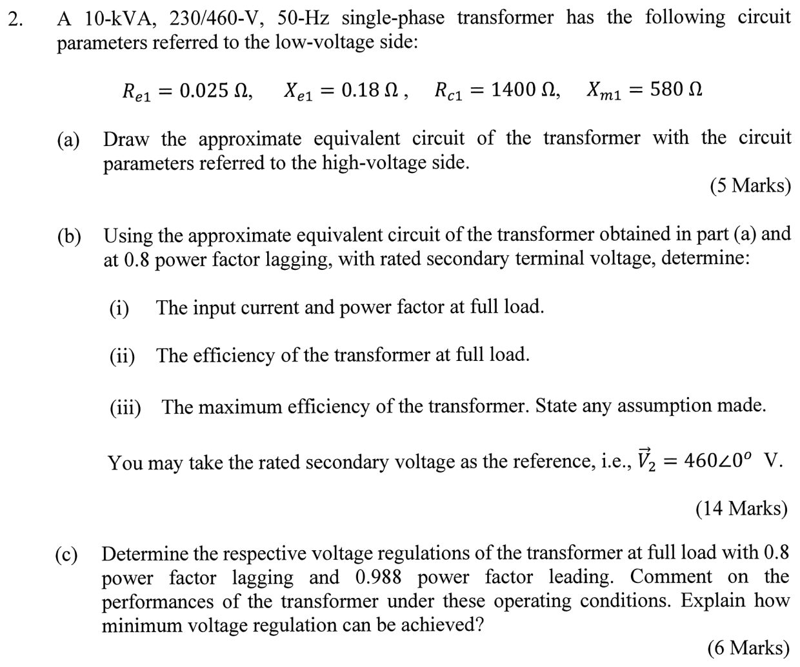
Question: A 10kVA, 230/460V, 50Hz transformer has Re1=0.025Ω, Xe1=0.18Ω, Rc1=1400Ω, Xm1=580Ω, referred to the LOW-voltage (230V) side. (a) Draw the approximate equivalent circuit referred to the HIGH-voltage side. (b) At full load, 0.8PF lagging, rated secondary voltage: find the input current and PF, the efficiency, and the maximum efficiency (stating your assumption). (c) Find the voltage regulation at 0.8PF lagging and at 0.988PF leading; comment, and explain how minimum VR is achieved.
Step 1 — refer everything to the HV side first. Going from the side a transformer parameter is given on to the OTHER side means multiplying impedances by (that other side's rated voltage ÷ this side's rated voltage)². Here a=460/230=2, so multiply every ohm value by 2²=4.
Step 2 — full load current, then work back to find the primary-referred voltage. Rated secondary (HV side) current = 10000/460 ≈ 21.74A. At 0.8PF lagging, add the series-impedance drop to get V₁' (the voltage the approximate circuit's shunt branch sees).
Step 3 — exciting current, then total input current and PF. The shunt branch (Rc2∥jXm2) sits at V₁' in the approximate model.
Step 4 — losses and efficiency. Copper loss uses the ACTUAL rated current through Re2; core loss uses V₁' (not the rated 460V) since that's the true voltage across the magnetizing branch once the load is drawing current.
Step 5 — maximum efficiency. Assumption: core loss stays roughly constant with load (it depends on voltage, not current, and V₁' barely moves). Max efficiency happens where copper loss (which scales as load²) equals core loss — solve for the load fraction x where that's true.
Step 6 — voltage regulation at both power factors. VR = (|V₁'|−V_rated)/V_rated. Recompute V₁' at 0.988 PF LEADING (current now leads voltage instead of lagging).
Comment: at 0.988 leading the VR is essentially zero — this isn't a coincidence, it's the whole point of the question. Voltage regulation depends on the angle between the load current and the series impedance's own angle; VR can be driven to exactly zero (or even slightly negative — secondary voltage RISING under load) at some specific leading power factor close to unity, because the reactive part of the load current then partially cancels the reactive voltage drop across Xe2 instead of adding to it. Minimum (zero) VR is achieved by operating at a leading power factor chosen so the capacitive VAR draw exactly offsets Xe2's inductive drop — this is part of why power-factor-correction capacitors are used on transformer-fed loads.
Notes to write down
- VR uses the SERIES impedance drop only (V₁' relative to rated secondary V), while efficiency needs BOTH the series (copper) loss and the shunt (core) loss.
- Leading power factor can drive VR toward zero or negative — this is the standard exam "comment on VR at leading vs lagging PF" pattern, always worth checking both.
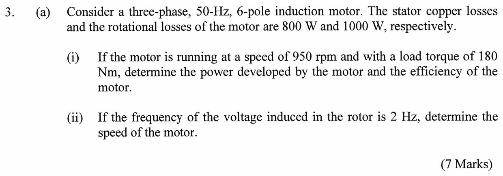
Question: A three-phase, 50-Hz, 6-pole induction motor has stator copper losses of 800 W and rotational losses of 1000 W. (i) The motor runs at 950 rpm with a load torque of 180 N·m: find the power developed by the motor and its efficiency. (ii) If the frequency of the voltage induced in the rotor is 2 Hz, find the speed of the motor. (7 marks)
What is really being asked? Electrical power goes in at the stator terminals and every watt either becomes useful shaft power or is lost on the way. Part (i) wants you to walk backwards from the shaft (the load you are told about) to the input, collecting the losses in the order they were taken off. Part (ii) is a completely separate mini-question about frequencies.
Step 1 — slip first, because everything else hangs on it. The rotating field turns at synchronous speed; the rotor lags behind it by the slip.
| f, p | supply frequency (Hz) and number of poles (6 poles = 3 pole pairs, so a slow field). More poles means a slower rotating field. |
|---|---|
| ns | speed of the rotating magnetic field in rpm. The rotor can never quite reach it (if it did, no flux would cut the rotor bars, so no current and no torque). |
| s | slip, a pure fraction (0.05 = 5 %). It is the fraction of synchronous speed the rotor is “losing”. |
| ωm | rotor speed in rad/s. Power = torque × angular speed in rad/s, so rpm must be converted first (a classic slip-up). |
Step 2 — the power chain, from the shaft back to the wall. The load torque of 180 N·m is what the shaft actually delivers to the load, so it gives the output power. Add the rotational loss (friction and windage, which were taken off inside the machine) to get the developed power.
Pdev = Pout + Prot = 17 907 + 1000 = 18 907 W
Pag = Pdev/(1 − s) = 18 907/0.95 = 19 902 W Pin = Pag + Pcu1 = 19 902 + 800 = 20 702 W
η = Pout/Pin = 17 907/20 702 = 0.865 = 86.5 %
| Pout | useful mechanical power at the shaft = Tloadωm. |
|---|---|
| Pdev | mechanical power developed inside the rotor = (1 − s)Pag = Tdevωm. It is bigger than Pout by exactly the rotational loss. |
| Pag | air-gap power: everything that crosses from stator to rotor. Splits as Pcu2 : Pdev : Pag = s : (1 − s) : 1, which is why dividing Pdev by (1 − s) recovers Pag. |
| Pcu1 | stator copper loss (given, 800 W). The question gives no stator core loss, so none is subtracted separately (it is lumped into the rotational loss in this course). |
Step 3 — part (ii), rotor frequency. The rotor conductors see the field sweeping past at the slip speed, not at full synchronous speed, so the voltage induced in them has frequency fr = s·f.
| fr | frequency of the emf and current in the rotor (Hz). It is 50 Hz at standstill (s = 1) and falls towards 0 Hz as the rotor catches up with the field. |
|---|
Sanity check. Total losses = 800 + 995 (rotor copper, sPag) + 1000 = 2795 W, and Pin − Pout = 20 702 − 17 907 = 2795 W ✓. Torque check: Pag/ωs = 19 902/104.72 = 190.1 N·m = Pdev/ωm ✓. A 2 Hz rotor frequency is only 4 % of 50 Hz, a normal full-load slip. Trap: if you mistakenly treated the 180 N·m as the developed torque you would get Pdev = 17.9 kW; the word “load” says it is the shaft (output) torque.
Notes to write down
- Working backwards: Pout = Tloadωm → +Prot = Pdev → ÷(1 − s) = Pag → +Pcu1 = Pin. Convert rpm to rad/s with 2π/60 before multiplying by torque.
- “Load torque” means shaft torque (gives Pout); “developed torque” gives Pdev. They differ by the rotational loss.
- fr = s·f, so s = fr/f and n = ns(1 − s). Answers here: Pdev = 18.9 kW, η = 86.5 %, n = 960 rpm.
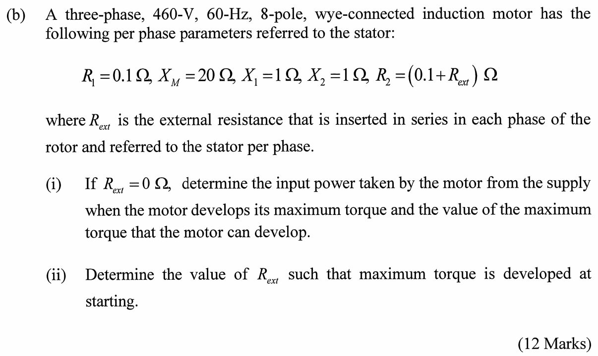
Question: A three-phase, 460-V, 60-Hz, 8-pole, wye-connected induction motor has per-phase parameters referred to the stator: R1 = 0.1 Ω, XM = 20 Ω, X1 = 1 Ω, X2 = 1 Ω, R2 = (0.1 + Rext) Ω, where Rext is an external resistance inserted in series in each rotor phase (referred to the stator, per phase). (i) With Rext = 0, find the input power taken from the supply when the motor develops its maximum torque, and the value of that maximum torque. (ii) Find Rext so that the maximum torque is developed at starting. (12 marks)
What is really being asked? The motor produces a torque that changes with slip: zero at synchronous speed, rising to a peak (the breakdown torque Tmax) at one particular slip smax, then falling again towards standstill. (i) asks for the height of that peak, and for the electrical power the motor swallows while sitting at the peak. (ii) asks: how much resistance must we add to the rotor to slide the peak all the way to s = 1 (standstill), so the motor starts with its best possible torque?
Step 1 — per-phase quantities. Treat one phase (wye, so phase voltage = line voltage ÷ √3) and find the synchronous angular speed.
Step 2 — Thevenin equivalent seen by the rotor branch. Everything to the left of the rotor branch (the supply, R1, X1 and the magnetising reactance XM) is squashed into one voltage source Vth in series with one impedance Zth. This turns a three-branch circuit into a simple series loop, which is what makes Tmax and smax easy to find.
Vth = VφXM/|R1 + j(X1 + XM)| = 265.58(20)/21.000 = 252.93 V
| Zth | the stator side seen from the rotor terminals = (R1 + jX1) in parallel with jXM. Its real part is Rth = 0.0907 Ω and its reactive part Xth = 0.9528 Ω. |
|---|---|
| Vth | open-circuit voltage at the rotor terminals: a voltage divider between XM and the stator impedance R1 + j(X1 + XM). It is slightly less than Vφ. |
Step 3 — slip and torque at the peak. With the rotor branch R2/s + jX2 hung on the Thevenin source, the power delivered to R2/s is largest when R2/s equals the magnitude of all the other impedance in the loop (maximum power transfer). That gives smax, and putting it back gives Tmax.
smax = R2/K = 0.1/1.9549 = 0.0512 (n = 900(1 − 0.0512) = 854 rpm)
Tmax = 3Vth² / {2ωs[Rth + K]} = 3(252.93)² / {2(94.25)(0.0907 + 1.9549)} = 497.7 N·m
| K | magnitude of the total impedance that sits in series with R2/s at the peak: √(Rth² + (Xth + X2)²). The reactances add because both are in the series loop. |
|---|---|
| smax | slip at which torque peaks. It is proportional to R2: more rotor resistance pushes the peak to higher slip (lower speed). |
| Tmax | breakdown (pull-out) torque. It depends on Vth², ωs, Rth and K, but not on R2. Beyond this load the motor stalls. |
| ωs | synchronous speed in rad/s. Torque = air-gap power ÷ ωs (the air-gap power is carried by the rotating field). |
Step 4 — input power at the peak. Now put s = smax into the full circuit: R2/s = K = 1.9549 Ω. The input impedance per phase is Zin = R1 + jX1 + jXM ∥ (R2/s + jX2). No core loss is given, so all input power is real power in the resistances; the quickest way is Pin = 3I1²Re(Zin).
I1 = Vφ/|Zin| = 265.58/2.816 = 94.31 A
Pin = 3I1²Re(Zin) = 3(94.31)²(1.858) = 49 579 W ≈ 49.6 kW (= √3 VLILcos φ = √3(460)(94.31)(0.660))
Step 5 — part (ii), moving the peak to standstill. Maximum torque at starting means smax = 1, i.e. the total rotor resistance must equal K. K does not depend on R2, so it is still 1.9549 Ω.
Sanity check. Three independent confirmations: (1) solving the full circuit directly for I2 at s = 0.0512 gives T = 3I2²(R2/s)/ωs = 497.74 N·m, the same as the Thevenin formula; (2) Pag = Pin − 3I1²R1 = 49 579 − 2669 = 46 911 W and Pag/ωs = 497.7 N·m ✓; (3) with Rext = 1.855 Ω the starting torque (s = 1) comes out at 497.7 N·m = Tmax, while with Rext = 0 it is only 52.9 N·m (about 11 % of Tmax), which is why the question bothers to ask for Rext. The low power factor (0.66) at the peak shows why motors are never run there continuously.
Notes to write down
- Thevenin: Zth = jXM(R1 + jX1)/(R1 + j(X1 + XM)); Vth = VφXM/|R1 + j(X1 + XM)|; use Vφ = VL/√3 for a wye.
- smax = R2/√(Rth² + (Xth + X2)²); Tmax = 3Vth²/{2ωs[Rth + √(…)]}. Tmax is independent of R2; smax is proportional to it.
- Max torque at start: R2,total = √(Rth² + (Xth + X2)²), then subtract the motor's own R2 to find Rext.
- Input power at any slip needs the full circuit (not Thevenin): Pin = 3I1²Re(Zin). Answers: Tmax = 497.7 N·m, Pin = 49.6 kW, Rext = 1.855 Ω.
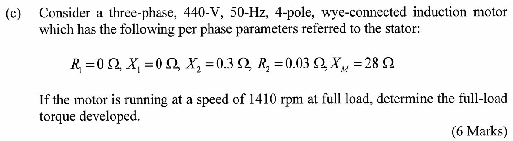
Question: A three-phase, 440-V, 50-Hz, 4-pole, wye-connected induction motor has per-phase parameters referred to the stator: R1 = 0 Ω, X1 = 0 Ω, X2 = 0.3 Ω, R2 = 0.03 Ω, XM = 28 Ω. The motor runs at 1410 rpm at full load. Determine the full-load torque developed. (6 marks)
What is really being asked? Torque developed means Tdev = air-gap power ÷ ωs. The air-gap power is the power delivered to the rotor resistance R2/s, so all we need is the rotor current. The trick of the question is that R1 = X1 = 0, so the supply voltage appears directly across the rotor branch; no Thevenin algebra and no parallel-branch algebra are needed.
Step 1 — slip and per-phase voltage.
Step 2 — rotor current. With nothing in series on the stator side, the rotor branch R2/s + jX2 is connected straight across Vφ (the magnetising branch jXM is in parallel with it and takes its own separate current, but that current does not flow in the rotor and produces no torque).
I2 = Vφ/|Z2| = 254.03/0.5831 = 435.7 A
| R2/s | the rotor resistance “as seen from the stator”. It bundles the rotor copper loss and the mechanical load into one resistor: R2/s = R2 + R2(1 − s)/s. At 6 % slip it is 0.5 Ω, 16.7 times R2. |
|---|---|
| X2 | rotor leakage reactance referred to the stator (0.3 Ω). It is the same size whatever the slip in this model. |
| I2 | rotor current per phase referred to the stator (A). With R1 = X1 = 0 it is simply Vφ divided by the rotor-branch impedance. |
Step 3 — air-gap power and torque.
Tdev = Pag/ωs = 284 706/157.08 = 1812 N·m
Sanity check. Second route: Pdev = (1 − s)Pag = 0.94(284.7) = 267.6 kW and ωm = 2π(1410)/60 = 147.65 rad/s, so T = Pdev/ωm = 1812.5 N·m, the same. Also Pcu2 = sPag = 17.1 kW = 3(435.7)²(0.03) ✓. Solving the full circuit (including XM) with the current-divider rule for the rotor current gives the identical 435.7 A, confirming that XM drops out. The numbers describe a very large machine (about 360 hp); that is simply the exam data. Trap: using ωm in T = Pag/ω would give 1928 N·m, which is wrong; use ωs with Pag and ωm with Pdev.
Notes to write down
- If R1 = X1 = 0, then Vth = Vφ and I2 = Vφ/(R2/s + jX2). XM carries no rotor current and can be ignored for torque.
- Tdev = 3I2²(R2/s)/ωs = Pag/ωs = Pdev/ωm. Match the power to its own speed.
- Read slip from the speed: s = (ns − n)/ns; here s = 0.06, R2/s = 0.5 Ω. Answer: Tdev = 1812 N·m.
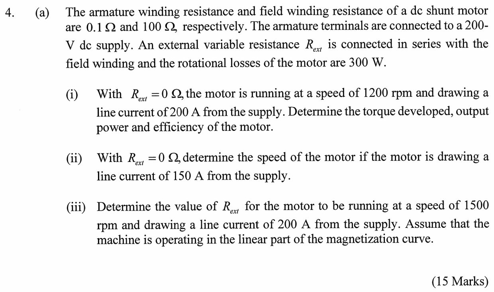
Question: A dc shunt motor has armature resistance RA = 0.1 Ω and field resistance RF = 100 Ω, and the armature terminals are connected to a 200-V dc supply. An external variable resistance Rext is connected in series with the field winding. The rotational losses are 300 W. (i) With Rext = 0, the motor runs at 1200 rpm and draws a line current of 200 A: find the torque developed, the output power and the efficiency. (ii) With Rext = 0, find the speed if the line current is 150 A. (iii) Find Rext for the motor to run at 1500 rpm while drawing a line current of 200 A; assume the machine operates in the linear part of the magnetisation curve. (15 marks)
What is really being asked? A shunt motor has two parallel branches across the supply: the field winding (which makes the magnetic flux) and the armature (which makes the torque). The line current is the sum of the two, so the first move in every part is to split it: IA = IL − IF. Then find the back-emf EA, and from EA and the speed the power and torque follow.
Step 1 — part (i): the circuit equations.
EA = VT − IARA = 200 − 198(0.1) = 180.2 V
Pdev = EAIA = 180.2 × 198 = 35 680 W ωm = 2π(1200)/60 = 125.66 rad/s
Tdev = Pdev/ωm = 35 680/125.66 = 283.9 N·m
Pout = Pdev − Prot = 35 680 − 300 = 35 380 W (≈ 35.4 kW)
Pin = VTIL = 200 × 200 = 40 000 W η = 35 380/40 000 = 88.4 %
| VT | terminal (supply) voltage, 200 V. The field is wired straight across it, so with Rext = 0 the field current is fixed. |
|---|---|
| IF, IA, IL | field, armature and line current (A). For a shunt motor IL = IA + IF. The field current makes the flux, the armature current makes the torque. |
| EA | back-emf (internal generated voltage) = Kφωm. The spinning armature acts as a generator that “pushes back” against the supply, so the supply only has to overcome the small drop IARA: VT = EA + IARA. |
| Pdev | electrical power converted to mechanical power = EAIA = Tdevωm. Subtract the rotational loss to get the shaft output. |
Valid when the question gives no brush drop or other losses beyond the ones listed (here: armature copper, field copper, and 300 W rotational loss).
Step 2 — part (ii): new load, same field. With Rext = 0 the field current is still 2 A, so the flux is unchanged and EA is proportional to speed. The only thing that changed is the armature current.
EA2/EA1 = n2/n1 ⇒ n2 = 1200(185.2/180.2) = 1233 rpm
Second route: Kφ = EA1/ωm1 = 180.2/125.66 = 1.434 V·s/rad, so ω2 = 185.2/1.434 = 129.14 rad/s = 1233 rpm ✓. The motor runs faster at the lighter load, as a shunt motor should (the speed only rises slightly because EA changes by under 3 %).
Step 3 — part (iii): weaken the field to reach 1500 rpm. Adding Rext in series with the field lowers IF and hence the flux (linear magnetisation: φ ∝ IF), so for the same back-emf the motor must spin faster. Both EA and IA now depend on the unknown IF, so write EA two ways and equate.
Scaling from (i): EA/180.2 = (IF/2)(1500/1200) ⇒ EA = 112.625 IF
Equate: 180 + 0.1IF = 112.625IF ⇒ IF = 180/112.525 = 1.5996 A
RF,total = VT/IF = 200/1.5996 = 125.03 Ω ⇒ Rext = 125.03 − 100 ≈ 25.0 Ω
| EA2/EA1 | (IF2/IF1)(n2/n1): since EA = K′IFn when flux ∝ IF. The constant K′ cancels, so you only need the known operating point from part (i). Valid only on the linear part of the magnetisation curve (which the question tells us to assume). |
|---|---|
| Rext | extra resistance in series with the field. It lowers IF = VT/(RF + Rext) and so weakens the flux. |
Sanity check. Quick estimate: EA hardly changes (180.2 V before, 180.16 V after), so IF·n must stay almost constant: IF ≈ 2(1200/1500) = 1.6 A, in line with 1.5996 A. Second route with K′ = EA1/(IF1n1) = 0.07508 V/(A·rpm): IF = EA/(K′ × 1500) = 180.16/(0.07508 × 1500) = 1.5996 A ✓. The armature current rises slightly to 198.4 A and the torque falls to about 227.6 N·m (T ∝ IFIA, about 80 % of 283.9 N·m). Trap: the 200 A in (iii) is the line current, so the armature current is IA = 200 − IF = 198.4 A, not the 198 A of part (i) (the field current is no longer 2 A). Because IF is small the final answer barely moves (25.0 Ω either way), but writing IA = IL − IF2 is the correct method and is what earns the marks.
Notes to write down
- Shunt motor routine: IF = VT/RF → IA = IL − IF → EA = VT − IARA → Pdev = EAIA → T = Pdev/ωm → Pout = Pdev − Prot → η = Pout/(VTIL). Answers: 283.9 N·m, 35.4 kW, 88.4 %.
- Same field (Rext = 0): EA ∝ n, so n2 = n1EA2/EA1 = 1233 rpm.
- Field Rext (linear magnetisation): EA2/EA1 = (IF2/IF1)(n2/n1), with EA2 = VT − RA(IL − IF2). Answer Rext ≈ 25.0 Ω. Weaker field ⇒ faster motor.
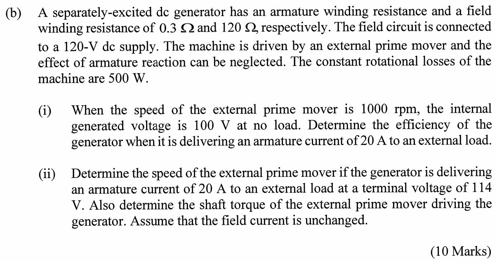
Question: A separately-excited dc generator has armature resistance 0.3 Ω and field resistance 120 Ω. The field circuit is connected to a 120-V dc supply. The machine is driven by an external prime mover, armature reaction is neglected, and the constant rotational losses are 500 W. (i) At a prime-mover speed of 1000 rpm the internal generated voltage is 100 V at no load. Find the efficiency when the generator delivers an armature current of 20 A to an external load. (ii) Find the prime-mover speed if the generator delivers an armature current of 20 A at a terminal voltage of 114 V, and the shaft torque of the prime mover; assume the field current is unchanged. (10 marks)
What is really being asked? Here the machine runs backwards compared with a motor: a prime mover supplies mechanical power at the shaft, the machine turns it into electrical power EAIA, and the load receives VTIA after the armature resistance has taken its share. Because the field is on its own 120 V supply the flux (hence EA per rpm) does not change with load.
Step 1 — field current and the “constant”.
Step 2 — part (i): losses, input and output. The generator equation is the mirror image of the motor: VT = EA − IARA. At 1000 rpm EA is still 100 V (the speed is unchanged, only the load was added).
Pdev = EAIA = 100 × 20 = 2000 W Pshaft = Pdev + Prot = 2000 + 500 = 2500 W field supply: VFIF = 120 W
η = Pout/(Pshaft + VFIF) = 1880/2620 = 0.718 = 71.8 %
| EA | internal generated voltage = Kφωm. For a generator it is what the machine produces before the armature drop. |
|---|---|
| VT | terminal voltage seen by the load. It is lower than EA by IARA (6 V here). |
| Pdev | power converted between mechanical and electrical = EAIA = Tdevωm. |
| Pshaft | mechanical power the prime mover must supply = Pdev + Prot (it also has to overcome friction, windage and core loss). |
| VFIF | power drawn by the separate field supply (120 W). It is a real input to the system, so the course counts it in the total input for a separately-excited machine. |
Interpretation used: following the course convention for a separately-excited machine, the total input is shaft power plus field-supply power, giving 71.8 %. If you count only the shaft power as input, η = 1880/2500 = 75.2 %. State which one you use in an exam; the loss bookkeeping confirms the 71.8 % figure: losses = IA²RA (120 W) + Prot (500 W) + field (120 W) = 740 W and 1880 + 740 = 2620 W ✓.
Step 3 — part (ii): what speed gives 114 V at 20 A? Work backwards from the terminal voltage to EA, then use proportionality to speed (field current, hence flux, is unchanged).
EA ∝ n ⇒ n = 1000(120/100) = 1200 rpm ωm = 2π(1200)/60 = 125.66 rad/s
Step 4 — shaft torque of the prime mover. The prime mover supplies Pdev plus the rotational loss (rotational loss is stated to be constant at 500 W).
Tshaft = Pshaft/ωm = 2900/125.66 = 23.1 N·m
Sanity check. The torque splits as Tdev = 2400/125.66 = 19.10 N·m (electromagnetic, the part that creates the electricity) plus Trot = 500/125.66 = 3.98 N·m (friction etc.): 19.10 + 3.98 = 23.08 N·m ✓. Sensibility: to hold 114 V against the load drop the machine must be driven 20 % faster than the 1000 rpm that gave 100 V; the no-load voltage would then be 120 V and the load drops it by exactly 6 V. Trap: do not use VT (114 V) as the speed-proportional voltage; it is EA that is proportional to speed, so add IARA first.
Notes to write down
- Generator: VT = EA − IARA (motor has the opposite sign). Separately excited: IF = VF/RF, IL = IA.
- Pout = VTIA; Pdev = EAIA; Pshaft = Pdev + Prot; η = Pout/(Pshaft + VFIF) = 71.8 % (75.2 % if the field supply is not counted; say which).
- Constant IF ⇒ EA ∝ n: find EA = VT + IARA first, then n = 1000(120/100) = 1200 rpm. Shaft torque = (EAIA + Prot)/ωm = 23.1 N·m.
📄 Paper 2 — 2023-2024 Semester 2
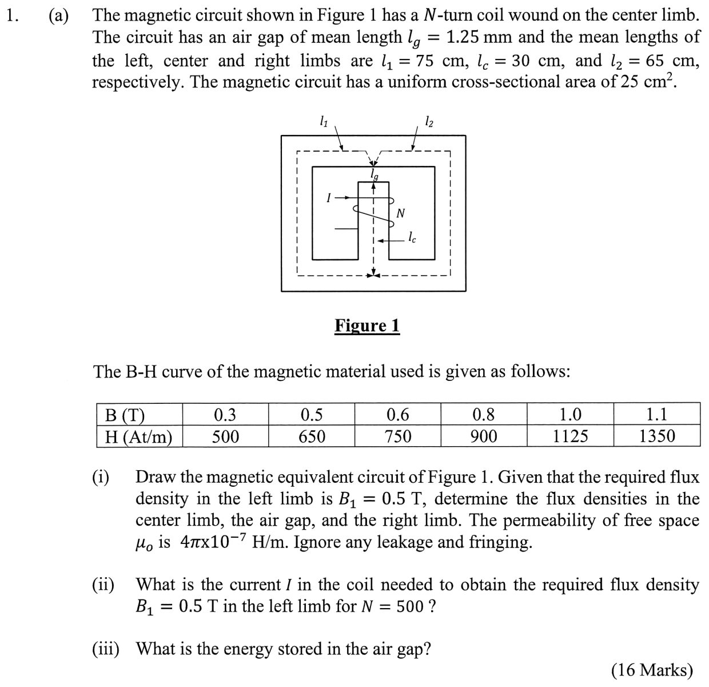
Question: A 3-limb core has a 500-turn coil on the CENTER limb, with a 1.25mm air gap also in the center limb. Left limb l₁=75cm, center l_c=30cm, right limb l₂=65cm, all area 25cm². The core's B-H curve is given as a table (not a fixed μᵣ). Given B₁=0.5T in the left limb: find the flux densities in the center limb, air gap, and right limb, then the coil current for N=500, then the energy stored in the air gap.
Step 1 — same left∥right-in-parallel, center-in-series topology as before, just with the coil moved to the CENTER limb this time and a nonlinear core. Left and right limbs are the two parallel "return" branches; the center limb (with the coil and gap) is the series "driving" branch. Nonlinear just means: instead of ℛ=l/(μ₀μᵣA), read H directly off the table at whatever B you're given.
Step 2 — left limb: read H off the table at the given B₁, get its mmf.
Step 3 — right limb shares the SAME mmf (parallel branches), so work backward: F→H→B.
Step 4 — center limb carries the SUM of both (KCL), giving its own B, then H, then mmf — plus the gap, which is always linear (μ₀).
F_c,core = H_c×l_c = 405 At B_gap=B_c=1.1T → H_gap=B_gap/μ₀≈875,352 At/m → F_gap=H_gap×l_g≈1094.2 At
Step 5 — total mmf and current.
Step 6 — gap energy. The gap is always linear regardless of what the core does, so w=½HB still applies directly.
Every table lookup above landed on an EXACT entry in the given table (no interpolation needed) — that's a strong sign the topology assumption (center-in-series, left∥right) is the one the question intended, since a wrong topology would almost certainly produce an H or B value that falls between table rows.
Notes to write down
- With a nonlinear (table-based) core, the METHOD is unchanged from the linear case — only the "ℛ=l/(μ₀μᵣA)" step is replaced by "read H off the table at this B." Parallel branches still share mmf; series branches still add mmf; KCL still applies to flux.
- If a B-H table lookup lands exactly on a given row, that's a good sign you've got the right approach — exam tables are usually built so the intended method hits exact entries.
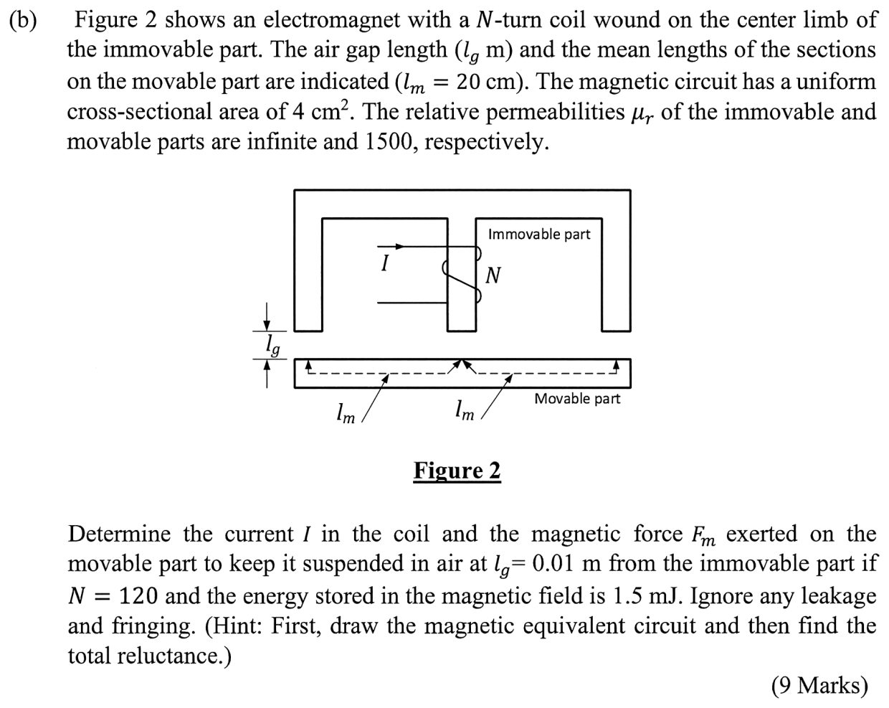
Question: A U-shaped electromagnet (immovable, μᵣ=∞) with a 120-turn coil suspends a movable plate (μᵣ=1500, mean length 20cm per side, two symmetric legs so 2×20cm total) 1cm below it, via TWO air gaps (one under each leg of the U). Given the energy stored in the magnetic field is 1.5mJ at this gap, find the coil current and the force holding the plate up.
Step 1 — build the total reluctance. The immovable U-core has μᵣ=∞, i.e. essentially zero reluctance — it contributes nothing. All the reluctance comes from the movable plate's own iron (finite μᵣ=1500) and the two air gaps (both length 1cm, in series along the one flux path).
ℛ_total ≈ 4.032×10⁷ H⁻¹
Step 2 — work backward from the GIVEN energy to find flux, then current. This is the reverse of the usual order (normally you'd find Φ first, then energy) — here energy is given, so invert E=½Φ²ℛ.
Step 3 — force from the energy-vs-position derivative. Since only the AIR GAP's reluctance changes with position x (the plate's own core reluctance doesn't depend on gap length), F = ½Φ²(dℛ_total/dx) = ½Φ²×(2/μ₀A) = Φ²/(μ₀A) — this collapses to exactly the same "B²A/μ₀ for two identical gaps" formula used for every relay-style force problem this course.
Cross-checked by recomputing Φ a second way (via I and ℛ_total directly, Φ=NI/ℛ_total) and getting the same 8.626µWb both directions.
Notes to write down
- When energy (or force) is given rather than asked for, just invert the usual formula — E=½Φ²ℛ ⟹ Φ=√(2E/ℛ); F=Φ²/(μ₀A) ⟹ Φ=√(Fμ₀A). Same formulas, solved backward.
- μᵣ=∞ for a core section means "treat its reluctance as zero" — it still exists physically, it just doesn't matter for the calculation.
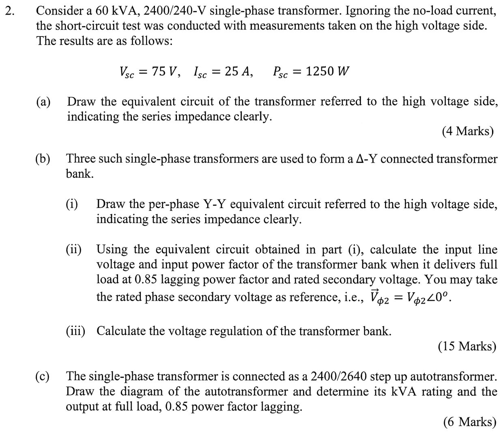
Question: A 60kVA, 2400/240V single-phase transformer has SC test data (HV side): Vsc=75V, Isc=25A, Psc=1250W. (a) Draw the equivalent circuit referred to HV side. (b) Three such units form a Δ-Y bank (2400V windings in Δ, 240V windings in Y). At full load, 0.85PF lagging, rated secondary voltage: find the input line voltage, input PF, and voltage regulation of the bank. (c) One unit is connected as a 2400/2640V step-up autotransformer — find its kVA rating and output power at full load, 0.85PF lagging.
Step 1 — SC test data taken directly on the HV side means the impedance is already HV-referred, no conversion needed.
Step 2 — the bank analysis reduces to analysing ONE transformer unit on its own per-phase basis. Since HV is Δ, each unit's HV winding phase voltage = the bank's HV LINE voltage directly (Δ: line=phase). Rated LV(Y) phase current = 60000/240=250A — that's also the LV line current (Y: line=phase current). Referred to HV, that's 25A — matching the unit's own rated HV current exactly, a good sanity check.
V₁' = 2400 + I₂'(Re1+jXe1) ≈ 2472.0∠0.49° V
Step 3 — since HV is Δ, the input LINE voltage of the bank equals this phase voltage directly (no √3 needed).
Step 4 (part c) — autotransformer power-advantage method. Boosting 2400V by adding the 240V winding in series gives 2640V output. The SERIES (240V) winding's current stays at its own two-winding rated value (250A) — that becomes the autotransformer's OUTPUT current, unchanged.
I_in = S_auto/2400 = 275A I_common = I_in−I_series = 25A (matches the 2400V winding's own rated 25A — check passes)
The I_common check above (25A, matching the winding's own rating exactly) is the standard way to confirm an autotransformer power calculation — if it doesn't land on the winding's real rated current, something upstream is wrong.
Notes to write down
- For a Δ-connected winding, LINE voltage = PHASE voltage directly — no √3 factor. (For Y, phase current = line current, also no √3.) Mixing these up is the single most common mistake on 3-phase bank questions.
- Autotransformer sanity check: I_common (computed as I_in−I_out) should always equal that winding's own two-winding-mode rated current. If it doesn't, recheck which winding is "common" vs "series."
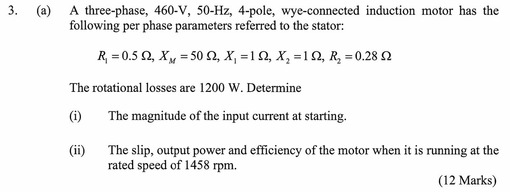
Question: A three-phase, 460-V, 50-Hz, 4-pole, wye-connected induction motor has these per-phase parameters referred to the stator: R1 = 0.5 Ω, XM = 50 Ω, X1 = 1 Ω, X2 = 1 Ω, R2 = 0.28 Ω. The rotational losses are 1200 W. Determine (i) the magnitude of the input current at starting; (ii) the slip, output power and efficiency when the motor runs at the rated speed of 1458 rpm. (12 marks)
What is really being asked? An induction motor is a transformer whose secondary (the rotor) is allowed to spin. The per-phase equivalent circuit lets you find the stator current at any speed, and the only thing that changes with speed is one resistor, R2/s. So the plan is: (1) work out the slip for each situation, (2) put that slip into R2/s, (3) find the input impedance and hence the current, (4) follow the power down the "pay-packet" chain to the shaft.
Step 1 — phase voltage, synchronous speed and slip. The circuit is per phase, so we need the voltage across one phase of the wye, not the line voltage.
| Vφ | voltage across one phase winding. In a wye, line voltage = √3 × phase voltage, so divide the 460 V by √3. |
|---|---|
| ns | speed of the rotating magnetic field in rpm (50 Hz, 4 poles gives 1500 rpm). |
| s | slip, the fractional lag of the rotor behind the field. At standstill n = 0 so s = 1; at synchronous speed s = 0. |
Step 2 — (i) starting current. "Starting" means the rotor has not yet moved, so n = 0 and s = 1. Then R2/s = 0.28/1 = 0.28 Ω. The rotor branch is a plain short-circuited secondary, and the motor behaves like a transformer with a shorted secondary, so the current is large.
| R1, X1 | stator winding resistance and leakage reactance, in series with everything else. |
|---|---|
| XM | magnetising reactance, the branch that carries the current needed to set up the air-gap flux. Core loss is lumped into the rotational loss, so there is no RC. |
| R2/s, X2 | rotor resistance and leakage reactance referred to the stator. The slip effect sits entirely in R2/s. |
| I1 | stator phase current. In a wye the line current equals the phase current. |
Valid for a balanced three-phase motor at rated frequency, one phase at a time (the other two are copies shifted by 120°).
Zin = (0.5 + j1) + (0.2691 + j0.9819) = 0.7691 + j1.9819 Ω |Zin| = 2.126 Ω
Istart = 265.58/2.126 = 124.9 A
The input power factor at starting is cos 68.8° = 0.362 lagging (not asked, but it shows the start current is mostly reactive).
Step 3 — (ii) slip at the rated speed.
The rotor branch is now 10 + j1 Ω, far bigger than at starting, which is why the current drops.
Zin = 0.5 + j1 + 9.256 + j2.795 = 9.756 + j3.795 Ω = 10.468∠21.26° Ω
I1 = 265.58/10.468 = 25.37 A pf = cos 21.26° = 0.932 lagging
Step 4 — follow the power down the chain. Power only enters the stator once; each stage then loses a slice.
| Pin | electrical power drawn from the supply (the factor 3 is because there are three phases). |
|---|---|
| Pcu1 | copper loss in the stator winding. |
| Pag | air-gap power, the power that crosses to the rotor through the magnetic field. |
| Pcu2 | rotor copper loss. A fraction s of the air-gap power is always burnt as heat in the rotor. |
| Pdev | mechanical power developed; the remaining fraction (1 − s) of Pag. |
| Prot | rotational losses (friction, windage; core loss is lumped in here too). Given: 1200 W. |
Pcu1 = 3(25.37)²(0.5) = 965.5 W Pag = 18 839 − 965.5 = 17 873 W
Pcu2 = 0.028 × 17 873 = 500.4 W Pdev = 17 873 − 500.4 = 17 373 W
Pout = 17 373 − 1200 = 16 173 W (≈ 16.2 kW) η = 16 173/18 839 = 85.8 %
Sanity check. Air-gap power can be found a second way: the rotor branch current is I2 = 24.41 A (current divider; the other 4.91 A goes down the magnetising branch), and 3I2²R2/s = 3(24.41)²(10) = 17 873 W, identical to Pin − Pcu1. An efficiency of about 86 % and a power factor of 0.93 are typical of a healthy motor at full load, and the starting current (124.9 A) is about 4.9 times the running current, in the normal 5–7 times range for direct-on-line starting.
Notes to write down
- Use Vφ = VL/√3 for a wye; slip goes only into R2/s. Starting means s = 1 so R2/s = R2.
- Zin = R1 + jX1 + jXM∥(R2/s + jX2); I1 = Vφ/|Zin|; pf = cos(arg Zin).
- Power chain: Pin → (−Pcu1) → Pag → (−sPag) → Pdev = (1 − s)Pag → (−Prot) → Pout. Trap: Pout is after the rotational loss, so subtract the 1200 W.
- Compute Pin as 3I²·Re(Zin) (or 3VφI cos φ), not as V·I, and cross-check Pag = 3I2²R2/s.
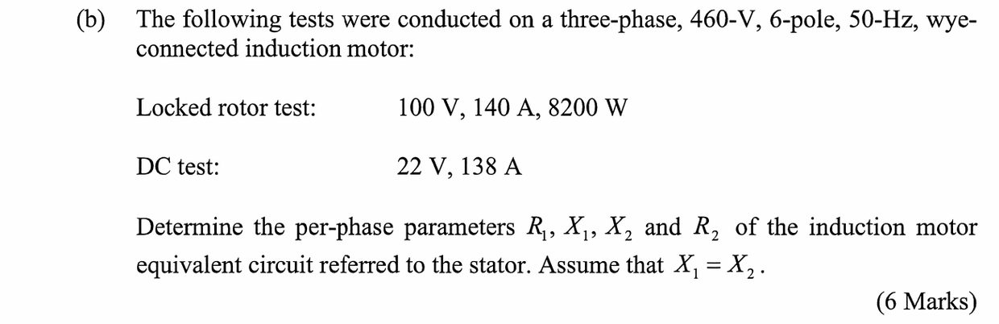
Question: The following tests were conducted on a three-phase, 460-V, 6-pole, 50-Hz, wye-connected induction motor. Locked-rotor test: 100 V, 140 A, 8200 W. DC test: 22 V, 138 A. Determine the per-phase parameters R1, X1, X2 and R2 of the induction-motor equivalent circuit referred to the stator. Assume X1 = X2. (6 marks)
What is really being asked? Two cheap measurements on the real motor give four circuit values. The DC test isolates the stator winding resistance only (no rotation, no changing flux, so no reactance). The locked-rotor test then gives the sum of stator and rotor values, and subtracting the DC result splits them.
Step 1 — DC test gives R1. Direct current is pushed into one terminal and out of another. In a wye, that path goes through two phase windings in series, so the meter sees 2R1.
| Vdc, Idc | the DC voltage and current measured across two stator terminals. A DC source sees only resistance, because a steady current has no di/dt for the inductance to act on. |
|---|---|
| 2R1 | two wye phase windings in series. (If the stator were a delta, one winding is in parallel with the other two in series, giving Rmeas = (2/3)R1 so R1 = 1.5V/I, a common trap. This motor is a wye.) |
Step 2 — locked-rotor test gives R1 + R2 and X1 + X2. With the rotor locked, n = 0 so s = 1 and the rotor branch is R2 + jX2. The test voltage is low (100 V, about 22 % of rated), so the magnetising branch jXM (a big impedance in parallel with the small rotor branch) draws a negligible current and is ignored. What is left is a single series impedance per phase.
| P | total three-phase power measured (8200 W); all of it is copper loss since nothing turns and the core flux is tiny. Divide by 3 for one phase. |
|---|---|
| VL/√3 | per-phase voltage of the test, 100/√3 = 57.74 V (the 100 V is a line voltage in the wye). |
| I | test current, 140 A, which is also the phase current in a wye. |
| ZLR, XLR | total series impedance and reactance seen per phase. The impedance triangle gives X from Z and R. |
ZLR = 57.74/140 = 0.41239 Ω ⟹ XLR = √(0.41239² − 0.13946²) = 0.38810 Ω
X1 = X2 = XLR/2 = 0.194 Ω
Sanity check. The locked-rotor power factor is P/(√3VI) = 8200/(√3 × 100 × 140) = 0.338, i.e. cos(arctan(XLR/RLR)) = cos 70.2°, which matches. The numbers are small (tenths of an ohm) as expected for a large, high-current motor, and R2 comes out positive and smaller than R1+R2, so the subtraction is sensible. The 6-pole detail is not needed here; it matters only if you later use the circuit to find speed.
Notes to write down
- DC test on a wye: R1 = Vdc/(2Idc) (two phases in series). On a delta it would be 1.5V/I.
- Locked rotor (s = 1), per phase: RLR = P/(3I²) = R1+R2; ZLR = (VL/√3)/I; XLR = √(Z²−R²) = X1+X2; then X1 = X2 = XLR/2.
- Trap: the 100 V is a line voltage, so divide by √3; the 8200 W is a three-phase total, so divide by 3.
- XM would come from the no-load test (Xnl ≈ Vφ/Inl = X1 + XM); it is not needed for this question.
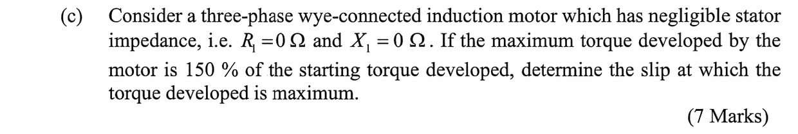
Question: A three-phase wye-connected induction motor has negligible stator impedance, i.e. R1 = 0 Ω and X1 = 0 Ω. If the maximum torque developed by the motor is 150 % of the starting torque developed, determine the slip at which the torque developed is maximum. (7 marks)
What is really being asked? No numbers are given for voltage or impedances, so the answer must come from the shape of the torque–slip curve alone. With the stator impedance zero, the supply sits directly across the rotor branch and the torque has a very simple form. Two facts, "peak torque is 1.5 times the torque at s = 1", then pin down where the peak is.
Step 1 — torque with R1 = X1 = 0. The source Vφ is across R2/s + jX2 (XM is across the source too, so it carries no rotor current and drops out). The torque is air-gap power divided by synchronous speed:
| x | the slip-dependent resistance R2/s. It is large near no-load (small s) and small at standstill (s = 1). |
|---|---|
| K | a constant (supply voltage and synchronous speed). It cancels when we take a torque ratio, which is why no voltage is given. |
| X2 | rotor leakage reactance referred to the stator. |
Valid only because R1 = X1 = 0. In general you would need the Thevenin equivalent.
Step 2 — where is the peak? The function x/(x² + X2²) is biggest when x = X2 (set the derivative to zero, or note that x + X2²/x is smallest then). So the peak occurs when R2/smax = X2:
Step 3 — torque at starting, in terms of smax. At s = 1, x = R2 = smaxX2:
Step 4 — impose the 150 % condition.
smax = (3 ± √5)/2 = 0.382 or 2.618
Which root? If smax = 2.618 (> 1), the peak would lie at a slip above 1, i.e. with the rotor driven backwards against the field (the braking region). Then in the motoring range 0 < s ≤ 1 the torque keeps rising as s rises, so the largest motoring torque would be the starting torque itself, a ratio of 1, not 1.5. So only the smaller root fits a normal motor:
Sanity check. With smax = 0.382, R2 = 0.382X2. Using the general ratio T/Tmax = 2smaxs/(smax² + s²) at s = 1 gives 2(0.382)/(0.146 + 1) = 0.667, so Tst = (2/3)Tmax, i.e. Tmax = 1.5Tst ✓. A numerical scan of the curve also puts the peak at s = 0.382.
Notes to write down
- R1 = X1 = 0 ⟹ T ∝ (R2/s)/[(R2/s)² + X2²] and smax = R2/X2; no voltage or XM needed because they cancel in a ratio.
- Tmax/T = (smax² + s²)/(2smaxs); at starting (s = 1): Tmax/Tst = (smax² + 1)/(2smax).
- The quadratic gives two roots whose product is 1 (0.382 and 2.618). Reject the root above 1: the peak must lie in the motoring range.
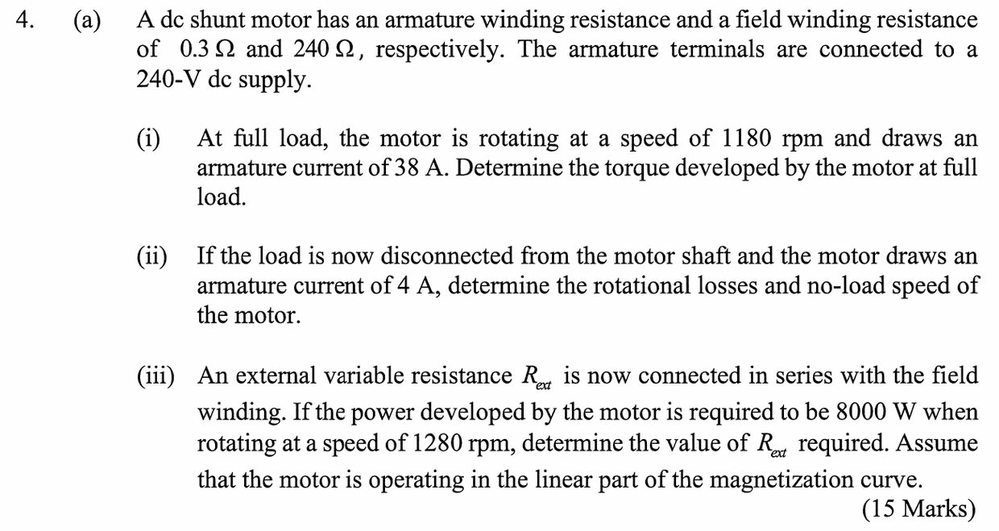
Question: A DC shunt motor has an armature winding resistance of 0.3 Ω and a field winding resistance of 240 Ω. The armature terminals are connected to a 240-V DC supply. (i) At full load the motor rotates at 1180 rpm and draws an armature current of 38 A. Determine the torque developed at full load. (ii) The load is now disconnected from the shaft and the motor draws an armature current of 4 A. Determine the rotational losses and the no-load speed. (iii) An external variable resistance Rext is now connected in series with the field winding. If the power developed by the motor is required to be 8000 W when rotating at 1280 rpm, determine Rext. Assume the motor operates in the linear part of the magnetisation curve. (15 marks)
What is really being asked? A shunt motor has two circuits side by side across the same 240 V: the field winding (which makes the magnetic flux) and the armature (which spins and produces torque). Everything follows from four facts: the field current from the supply, the back-emf, the developed power EAIA and torque = power/speed. Parts (ii) and (iii) then ask "what happens to the speed and flux when something changes", which is answered by scaling from the known full-load point.
Step 1 — the basic equations.
| IF | field current. The field is straight across the supply, so it is fixed at 240/240 = 1 A while VT and RF do not change. |
|---|---|
| EA | back-emf (internal generated voltage). The spinning armature acts as a generator that "pushes back" against the supply; only VT − EA is left to drive current through RA. |
| IARA | voltage dropped in the armature winding resistance. |
| Pdev | electrical power turned into mechanical power by the armature (before friction and windage). |
| ωm | shaft speed in rad/s. rpm must be converted: multiply by 2π/60. |
Step 2 — (i) torque at full load.
ωm = 2π(1180)/60 = 123.57 rad/s Tdev = 8686.8/123.57 = 70.3 N·m
Second route: Kφ = EA/ωm = 228.6/123.57 = 1.850 V·s/rad, and T = KφIA = 1.850 × 38 = 70.3 N·m ✓. The 38 A is the armature current; the line current would be 38 + 1 = 39 A, which is not needed here.
Step 3 — (ii) rotational losses and no-load speed. With the load removed, the motor still draws 4 A, but now all of the developed power only feeds friction, windage and core loss. So at no load the output is zero and Pdev = Prot (taking the rotational loss as constant).
For the speed: the field current is still 1 A (VT and RF unchanged), so the flux is unchanged and EA is directly proportional to speed (EA = Kφωm):
Second route: ω = EA,nl/Kφ = 238.8/1.850 = 129.08 rad/s = 1232.7 rpm ✓. The speed rises only about 4.5 % when the load is removed, which is the "almost constant speed" property of a shunt motor.
Step 4 — (iii) required Rext in the field. Adding resistance in the field circuit reduces IF, so weakens the flux and changes EA for a given speed. The plan is to find the armature quantities first (they do not depend on the field), then use the linear magnetisation (flux ∝ IF) to find the field current that gives that EA at 1280 rpm.
(a) Armature current from the developed power. The unknown IA appears in both EA and Pdev:
IA = [240 − √(240² − 4(0.3)(8000))]/(2 × 0.3) = 34.85 A (the other root, 765 A, would leave EA ≈ 10 V: an absurd stalled-motor condition)
EA = 240 − 0.3(34.85) = 229.54 V
(b) Linear magnetisation: EA = K′IFn, with the constant fixed from the full-load point of part (i):
IF = EA/(K′n) = 229.54/(0.19373 × 1280) = 0.9257 A
RF,total = VT/IF = 240/0.9257 = 259.3 Ω Rext = 259.3 − 240 = 19.3 Ω
| K′ | combined machine constant, volts per (amp of field current × rpm). It exists because flux ∝ IF in the linear region. Equivalent ratio form: EA2/EA1 = (IF2/IF1)(n2/n1). |
|---|---|
| RF,total | field winding plus external resistor, since they are in series across 240 V. |
Sanity check. Second route via the ratio form: IF2 = IF1(EA2/EA1)(n1/n2) = 1 × (229.54/228.6)(1180/1280) = 0.9257 A, the same. The torque at this point is 8000/(2π × 1280/60) = 59.7 N·m, lower than the 70.3 N·m of part (i), consistent with a weaker field (T = KφIA with smaller Kφ and smaller IA). Rext is positive, and a weaker field gives a higher speed (1280 rpm > 1180 rpm), as it should.
Notes to write down
- Shunt motor: IF = VT/RF; EA = VT − IARA; Pdev = EAIA; T = Pdev/ωm with ωm = 2πn/60. The question's "armature current" is not the line current.
- No-load test: Pout = 0, so Prot = EAIA at no load; same IF gives n ∝ EA.
- Linear magnetisation: EA2/EA1 = (IF2/IF1)(n2/n1). Given Pdev, solve the quadratic (VT − IARA)IA = Pdev and take the small root.
- Extra resistance in the field lowers IF and raises speed (field weakening). Rext = VT/IF2 − RF.
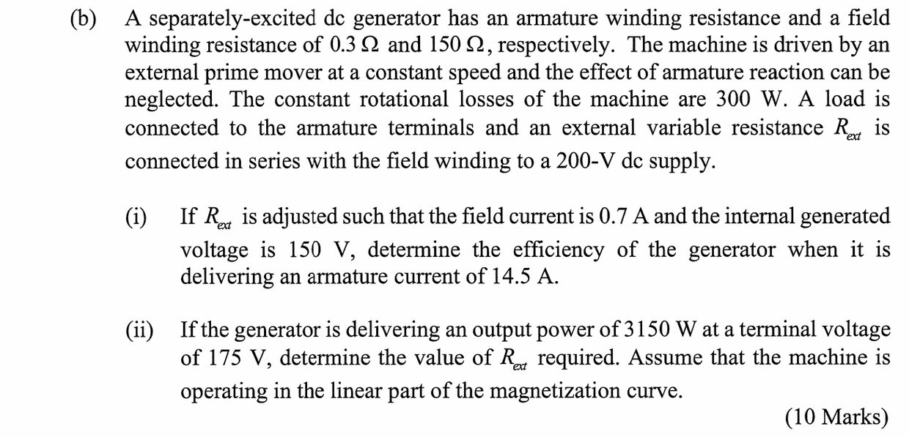
Question: A separately-excited DC generator has an armature winding resistance of 0.3 Ω and a field winding resistance of 150 Ω. It is driven by an external prime mover at a constant speed and the effect of armature reaction can be neglected. The constant rotational losses are 300 W. A load is connected to the armature terminals and an external variable resistance Rext is connected in series with the field winding to a 200-V DC supply. (i) If Rext is adjusted so that the field current is 0.7 A and the internal generated voltage is 150 V, determine the efficiency of the generator when it delivers an armature current of 14.5 A. (ii) If the generator delivers an output power of 3150 W at a terminal voltage of 175 V, determine the value of Rext required. Assume the machine operates in the linear part of the magnetisation curve. (10 marks)
What is really being asked? The generator has two separate circuits: a 200 V field supply (with Rext) that makes the flux, and an armature that produces the output. The internal voltage EA depends on flux and speed. Because the speed is constant, EA is proportional to the field current, which is the "knob" Rext adjusts. Part (i) is an efficiency (power out ÷ power in) bookkeeping; part (ii) works backwards from the load to the EA needed, then to the field current and Rext.
Step 1 — equations for a generator.
| VT | terminal voltage delivered to the load. It is less than EA because of the drop IARA inside the armature (a generator loses voltage, a motor "gains" back-emf). |
|---|---|
| IA | armature current; in a separately-excited generator it is all delivered to the load. |
| Pshaft | mechanical power the prime mover must supply: the developed power plus the rotational losses. |
| VFIF | power drawn from the separate field supply (200 V × IF). Because that supply is a separate source, it counts as an input. |
The efficiency convention used here (as on the DC concept page and in the tutorials) is total input = shaft power + field supply power.
Step 2 — (i) efficiency. EA = 150 V and IA = 14.5 A are given, so no flux scaling is needed.
Pdev = 150 × 14.5 = 2175 W Pshaft = 2175 + 300 = 2475 W
Pfield = VFIF = 200 × 0.7 = 140 W Pin = 2475 + 140 = 2615 W
η = 2111.9/2615 = 80.8 %
Interpretation note: if the field supply were not counted as an input, the efficiency would be 2111.9/2475 = 85.3 %. Because the problem explicitly gives the 200-V field supply and the field current, the field power is included here, and the 85.3 % figure is quoted only as the alternative.
Step 3 — (ii) required Rext. Work from the output backwards:
EA = VT + IARA = 175 + 18(0.3) = 180.4 V
The speed is constant and the magnetisation is linear, so EA ∝ IF. Using the known point from part (i) (0.7 A gives 150 V):
RF,total = 200/0.8419 = 237.57 Ω Rext = 237.57 − 150 = 87.6 Ω
Sanity check. In part (i), IF = 0.7 A needs RF,total = 200/0.7 = 285.7 Ω, so Rext = 135.7 Ω. In (ii) a higher EA (180.4 V versus 150 V) is needed, so more field current (0.842 A versus 0.7 A) and hence less series resistance (87.6 Ω versus 135.7 Ω), which agrees. Energy balance in (i): losses = armature 14.5²(0.3) = 63.1 W + rotational 300 W + field 140 W = 503.1 W = Pin − Pout = 2615 − 2111.9 ✓.
Notes to write down
- Generator: VT = EA − IARA, so from the load use EA = VT + IARA; Pout = VTIA (separately excited: IL = IA).
- Efficiency (separately excited): η = Pout/(EAIA + Prot + VFIF). State whether the field supply is counted; here it is (80.8 %), otherwise 85.3 %.
- Constant speed + linear magnetisation: EA ∝ IF, so IF2 = IF1(EA2/EA1). Then Rext = VF/IF2 − RF.
- Trap: do not use VT in the proportionality; the flux scales EA, not VT.
📄 Paper 3 — 2024-2025 Semester 1
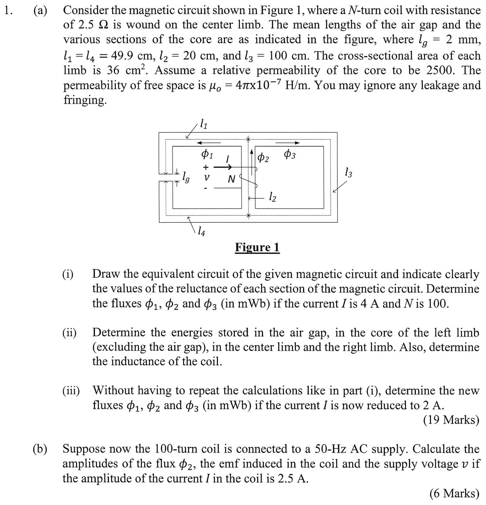
Question: A 3-limb core (coil resistance 2.5Ω, on the center limb) has l₁=l₄=49.9cm (left, split top/bottom around a 2mm gap), l₂=20cm (center, coil), l₃=100cm (right), area 36cm² throughout, μᵣ=2500. (a) With I=4A, N=100: find the three fluxes, the energy in each section (gap, left core, center, right), and the inductance. Then find the new fluxes at I=2A without repeating the calculation. (b) With the 100-turn coil on 50Hz AC and current amplitude 2.5A: find the amplitude of the center-limb flux, the induced emf, and the supply voltage.
Step 1 — coil is on the CENTER limb this time, so center is the series branch and left(with gap)∥right are the parallel pair — same shape as Paper 2 Q1(a), different numbers.
ℛ₁∥ℛ₃≈75,784 H⁻¹ ℛ_total = ℛ₂+(ℛ₁∥ℛ₃) ≈ 93,468 H⁻¹
Step 2 — Φ₂ (center, series branch) from the coil mmf directly, then split the shared mmf between the parallel branches.
Φ₁ = F₁₃/ℛ₁ ≈ 0.612 mWb Φ₃ = F₁₃/ℛ₃ ≈ 3.668 mWb (check: Φ₁+Φ₃=4.280mWb=Φ₂ ✓)
Step 3 — energy per section, and inductance.
L = N²/ℛ_total ≈ 107.0 mH
Step 4 — at I=2A, everything scales linearly (halved), no recomputation needed: Φ₁≈0.306mWb, Φ₂≈2.140mWb, Φ₃≈1.834mWb.
Step 5 (part b) — AC excitation. Using the same L (linear model still applies), find the amplitude of the FLUX the coil itself actually links (Φ₂, the center-limb flux, since that's what the coil is wound around) from the given current amplitude, then apply Faraday's Law for the emf amplitude, then combine with the coil resistance for the full supply voltage.
Z=R+jωL ≈ 33.70∠85.75° Ω v_amplitude = I_amp×|Z| ≈ 84.3 V
Notes to write down
- A coil only "sees" (links) the flux in the limb it's physically wound on — for a coil on the center limb, use Φ_center (not Φ_left or Φ_right) for L, e, and flux-linkage calculations, even though all three fluxes exist in the same circuit.
- emf amplitude (Nωφ_amp) and supply voltage amplitude (I_amp×|Z|) are two different numbers — the emf is the back-EMF alone, the supply voltage also has to cover the resistive drop, so v is always slightly larger than e when R>0.
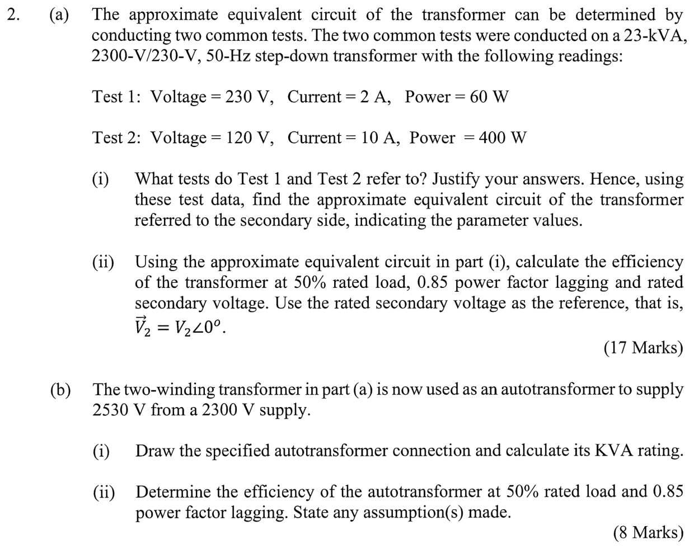
Question: A 23kVA, 2300/230V transformer has two tests: Test 1 (230V, 2A, 60W), Test 2 (120V, 10A, 400W). (a) Identify which test is which and justify; find the approximate equivalent circuit referred to the secondary. (b) Find the efficiency at 50% rated load, 0.85PF lagging, rated secondary voltage. (c) The transformer is reconnected as a 2300→2530V step-up autotransformer: find its kVA rating, and its efficiency at 50% of THAT rating, 0.85PF lagging.
Step 1 — identify the tests by comparing each to the transformer's own rated currents. Rated LV current = 23000/230=100A; rated HV current=23000/2300=10A. Test 1's voltage (230V) matches rated LV exactly, and its current (2A) is tiny compared to rated LV current (100A) — that's the signature of an open-circuit test, done at rated LV voltage. Test 2's current (10A) matches rated HV current EXACTLY, at a reduced voltage (120V, nowhere near rated 2300V) — that's the signature of a short-circuit test, done on the HV side at reduced voltage to reach rated current safely.
SC (HV, 120V,10A,400W): Ze1=12Ω, Re1=4Ω, Xe1≈11.31Ω → referred to LV (÷a²=100): Re2=0.04Ω, Xe2≈0.1131Ω
Step 2 — efficiency at 50% load, 0.85PF lagging.
P_out=9775W P_cu=I₂²Re2=100W P_core=|V₁'|²/Rc2≈62.5W η ≈ 98.4%
Step 3 (part c) — autotransformer rating. Boost 2300V by the 230V winding to reach 2530V; the series (230V) winding's current stays at its own rated 100A.
Step 4 — efficiency at 50% of the AUTOTRANSFORMER's rating. This is the key insight the question is testing: 50% of the AUTOtransformer's 253kVA rating corresponds to only 50% of the WINDING's own rated current too (since output current scales the same way either way) — so the copper loss is still just 0.5²×(the ORIGINAL 400W SC-test copper loss) = 100W, and core loss stays ≈60W (roughly constant, from the OC test). The autotransformer's OUTPUT power, though, is 50%×253kVA, which is far larger relative to those same small losses than the two-winding transformer's own 50%-load output was.
η_auto ≈ 99.85% (vs. 98.4% for the same unit run as a plain two-winding transformer at 50% load)
This ~1.5-percentage-point efficiency jump, from the exact same physical windings and the exact same losses, is the standard illustration of why autotransformers are so much more efficient than two-winding transformers when the step-up/step-down ratio is small: the SAME losses are being divided into a much LARGER delivered power.
Notes to write down
- To tell OC from SC test data apart: compare the test current to BOTH the rated LV and rated HV current. Whichever one it's tiny compared to (at rated voltage) is OC; whichever one it exactly matches (at reduced voltage) is SC.
- Autotransformer efficiency at "50% of its OWN rating" is not the same load fraction on the windings as "50% of the two-winding rating" — always re-derive what fraction of the WINDING's rated current that output level actually corresponds to.
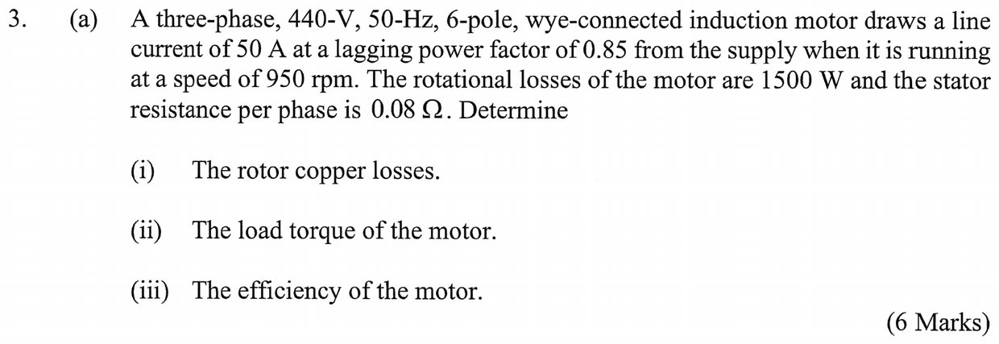
Question (6 marks): A three-phase, 440-V, 50-Hz, 6-pole, wye-connected induction motor draws a line current of 50 A at a lagging power factor of 0.85 from the supply while running at 950 rpm. The rotational losses are 1500 W and the stator resistance is 0.08 Ω per phase. Determine (i) the rotor copper losses, (ii) the load torque of the motor, (iii) the efficiency of the motor.
What is really being asked. No equivalent-circuit impedances are given, so this is a pure power-flow question: follow the watts from the supply socket to the shaft and note what is skimmed off at each stage. The only unusual step is finding the rotor copper loss, because nothing tells us the rotor resistance. The trick is that the rotor copper loss is always a fixed slice s of the air-gap power, so once we know the air-gap power and the slip we are done.
Step 1 — slip. The rotating field turns at synchronous speed; the rotor lags a little behind.
| ns | speed of the rotating stator field in rpm; 6 poles at 50 Hz gives 1000 rpm. |
|---|---|
| s | slip as a fraction: how far the rotor lags the field, as a share of ns. Here 5 %. |
| ωm | actual rotor (shaft) speed in rad/s, needed to turn power into torque (T = P/ω). |
Step 2 — electrical input power. The question gives line voltage and line current, so use the three-phase formula with √3. (For a Y-connected motor the line current equals the phase current, so the same 50 A also flows in every stator winding.)
| VL, IL | line-to-line voltage (440 V) and line current (50 A). Valid for any balanced three-phase load. |
|---|---|
| cosφ | power factor, 0.85 lagging: only this fraction of the VA becomes real watts; lagging is typical because a motor is inductive. |
Step 3 — walk down the power-flow chain. Stator copper loss first (the three phase windings each carry 50 A through 0.08 Ω), then what crosses the air gap, then the rotor's slice, then friction and windage.
Pag = Pin − Pcu1 = 32 389 − 600 = 31 789 W
(i) Pcu2 = s·Pag = 0.05 × 31 789 = 1589 W
Pdev = Pag − Pcu2 = (1 − s)Pag = 30 200 W
Pout = Pdev − Prot = 30 200 − 1500 = 28 700 W
| Pcu1 | heat in the stator windings, 3I2R1. The factor 3 is for the three phases. (Core loss is not separate in this course: it is lumped into the rotational loss.) |
|---|---|
| Pag | air-gap power: everything that leaves the stator and crosses the gap into the rotor. |
| Pcu2 | rotor copper loss = s·Pag. Valid in the standard equivalent circuit because Pcu2 : Pdev : Pag = s : (1−s) : 1. |
| Pdev | mechanical power developed by the rotor, (1−s)Pag, before friction and windage are removed. |
| Prot | rotational losses (friction + windage, and core loss lumped in): 1500 W, given. |
| Pout | useful shaft power delivered to the load. |
Step 4 — load torque and efficiency. Load (shaft) torque uses the output power, i.e. after the rotational losses, divided by the actual shaft speed.
(iii) η = Pout/Pin = 28 700/32 389 = 88.6 %
Sanity check. Add up all the losses: 600 + 1589 + 1500 = 3689 W, and Pin − Pout = 32 389 − 28 700 = 3689 W ✓. The developed torque would be Pdev/ωm = 30 200/99.48 = 303.6 N·m; the load torque is 15.1 N·m lower, which is exactly the rotational loss 1500/99.48 = 15.1 N·m ✓. Reading “load torque” as “developed torque” is the classic trap in this question.
Notes to write down
- Power-flow chain: Pin → (−Pcu1) → Pag → (−sPag) → Pdev → (−Prot) → Pout. Rotor copper loss comes from the slip: Pcu2 = sPag, so no rotor resistance is needed.
- Pin = √3VLILcosφ uses LINE quantities; Pcu1 = 3I2R1 uses PHASE current (equal to line current in Y) and per-phase R1.
- Tload = Pout/ωm (shaft torque, after Prot); Tdev = Pdev/ωm = Pag/ωs (slightly larger). Read the wording.
- Do the losses add up to Pin − Pout? That one-line check catches almost every slip.
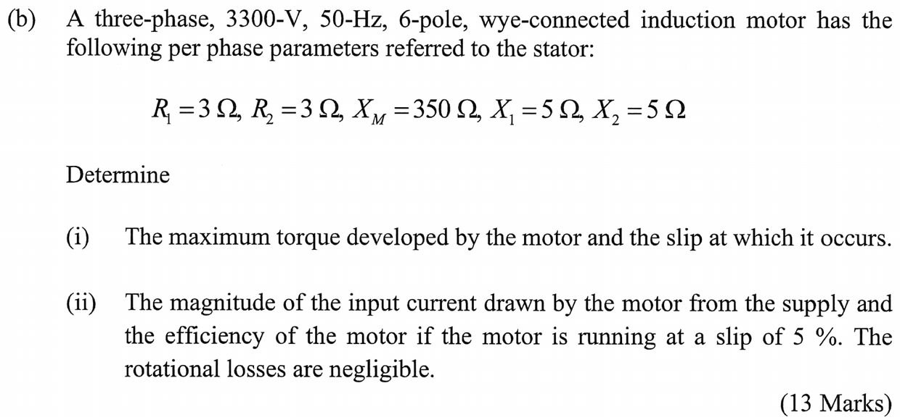
Question (13 marks): A three-phase, 3300-V, 50-Hz, 6-pole, wye-connected induction motor has the following per-phase parameters referred to the stator: R1 = 3 Ω, R2 = 3 Ω, XM = 350 Ω, X1 = 5 Ω, X2 = 5 Ω. Determine (i) the maximum torque developed by the motor and the slip at which it occurs; (ii) the magnitude of the input current drawn from the supply and the efficiency of the motor if it is running at a slip of 5 %. The rotational losses are negligible.
What is really being asked. Two different jobs on the same per-phase circuit. Part (i) asks “where on the torque–speed curve is the peak, and how high is it?”, and the clean way to answer that is the Thevenin equivalent: squash the source, R1, X1 and XM into one battery and one series impedance, as seen by the rotor branch. Part (ii) asks for the current at one specific operating point, so we solve the full circuit at s = 0.05 and then use the power-flow chain.
Step 1 — per-phase voltage and synchronous speed.
The equivalent circuit is a one-phase picture, so it is driven by the phase voltage (line voltage divided by √3 for Y), not 3300 V.
Step 2 — Thevenin equivalent seen by the rotor branch. Open the rotor branch off the circuit and look back: the source Vφ drives R1 + jX1 in series with jXM; the voltage across jXM is Vth, and the impedance seen looking back (source shorted) is jXM in parallel with R1 + jX1.
R1 + j(X1+XM) = 3 + j355 (magnitude 355.01 Ω)
|Vth| = 1905.3(350)/355.01 = 1878.4 V
Zth = j350(3 + j5)/(3 + j355) = (−1750 + j1050)/(3 + j355) = 2.916 + j4.954 Ω
| Vth | open-circuit voltage seen by the rotor branch: a voltage divider between jXM and the stator impedance. Only the magnitude matters for torque. |
|---|---|
| Zth | the equivalent series impedance of everything on the stator side. Rth = 2.916 Ω and Xth = 4.954 Ω. |
| XM | magnetising reactance, a big 350 Ω branch. Because it is so large, Vth is close to Vφ (1878 vs 1905 V). |
Step 3 (part i) — slip and size of the peak. The torque from the Thevenin circuit is T(s) = 3Vth2(R2/s) / {ωs[(Rth + R2/s)2 + (Xth + X2)2]}. The peak sits where the rotor branch “matches” the source: R2/s equals the magnitude of the rest of the loop.
smax = R2/√(…) = 3/10.3725 = 0.289 (n = 1000(1 − 0.2892) ≈ 711 rpm)
Tmax = 3Vth2 / {2ωs[Rth + √(…)]} = 3(1878.4)2 / {2(104.72)(2.916 + 10.3725)} = 10.585×106/2783.1 = 3803 N·m
| smax | slip at peak torque; proportional to R2 (a bigger rotor resistance moves the peak to a higher slip, i.e. lower speed). |
|---|---|
| Tmax | pull-out (breakdown) torque. It depends on Vth2 but not on R2. |
| ωs | synchronous speed in rad/s: torque = air-gap power divided by ωs. |
Step 4 (part ii) — full circuit at s = 0.05. At 5 % slip the rotor-branch resistor is R2/s = 3/0.05 = 60 Ω. That one resistor stands for both the rotor copper loss and the mechanical load.
jXM ∥ Z2 = j350(60 + j5)/(60 + j355) = 56.70 + j14.51 Ω
Zin = R1 + jX1 + (jXM ∥ Z2) = 59.70 + j19.51 = 62.81∠18.1° Ω
I1 = Vφ/|Zin| = 1905.3/62.81 = 30.33 A (pf = cos 18.1° = 0.9505 lagging)
For a Y-connected motor the line current equals the phase current, so 30.3 A is also the current drawn from the supply line.
Step 5 (part ii) — efficiency. Rotational losses are negligible, so Pout = Pdev.
Pag = Pin − Pcu1 = 156.5 kW Pcu2 = sPag = 7.83 kW Pdev = (1−s)Pag = 148.7 kW
η = Pout/Pin = 148.7/164.8 = 90.2 %
Sanity check. (1) Tmax computed straight from the full circuit at smax (T = Pag/ωs) gives the same 3803 N·m, and a numerical scan of the torque curve also peaks at s = 0.289, so the Thevenin formulas are confirmed. (2) At s = 0.05 the rotor-branch current from the current divider is 29.49 A and 3(29.49)2(60) = 156.5 kW = Pag ✓. (3) Pin = 3VφI1cosφ = 3(1905.3)(30.33)(0.9505) = 164.8 kW ✓. (4) The torque at 5 % slip is about 1495 N·m, roughly 39 % of Tmax, so the motor is comfortably on the stable side of the curve.
Notes to write down
- Thevenin: Vth = VφXM/|R1+j(X1+XM)|, Zth = jXM(R1+jX1)/(R1+j(X1+XM)); smax = R2/√(Rth2+(Xth+X2)2); Tmax = 3Vth2/(2ωs[Rth+√(…)]). Use Vφ = VL/√3.
- Circuit at slip s: Zin = R1+jX1+jXM∥(R2/s+jX2); I1 = Vφ/Zin. Trap: the rotor resistor is R2/s (60 Ω), not R2.
- Power chain from the circuit: Pin = 3I2Re(Zin), Pag = Pin − 3I2R1, Pdev = (1−s)Pag. η = Pdev/Pin only because Prot is stated negligible.
- Do Thevenin only for Tmax/smax (and torque at a slip); use the full circuit for currents, pf and efficiency.
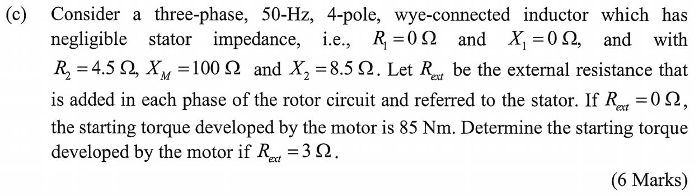
Question (6 marks): Consider a three-phase, 50-Hz, 4-pole, wye-connected “inductor” (printed that way; it is an induction motor) which has negligible stator impedance, i.e. R1 = 0 Ω and X1 = 0 Ω, and with R2 = 4.5 Ω, XM = 100 Ω and X2 = 8.5 Ω. Let Rext be the external resistance added in each phase of the rotor circuit and referred to the stator. If Rext = 0 Ω, the starting torque developed by the motor is 85 N·m. Determine the starting torque developed by the motor if Rext = 3 Ω.
What is really being asked. The supply voltage is not given, and neither is the line voltage or any current. That is a hint: the answer must come from a ratio in which V and ωs cancel. We know the torque with R2 = 4.5 Ω and we want it with R2 + Rext = 7.5 Ω.
Step 1 — why the circuit collapses. With R1 = X1 = 0 there is no stator voltage drop, so the supply Vφ sits directly across the whole parallel combination. The magnetising branch jXM then draws its own current from the source but carries none of the rotor current, so it has no effect on torque: XM = 100 Ω is a distractor. (Equivalently: Rth = Xth = 0 and Vth = Vφ.) At start the slip is s = 1, so the rotor branch is R2,tot + jX2 with R2,tot = R2 + Rext.
| I2 | rotor-branch current (referred to the stator) at standstill. |
|---|---|
| R2,tot | rotor resistance per phase including any external resistance, referred to the stator (slip-ring wound rotors only). |
| [3Vφ2/ωs] | a constant: the same for both cases because the supply and frequency do not change. This is what cancels in the ratio. |
| R/(R2+X22) | the only part that depends on rotor resistance. Valid for s = 1 and R1 = X1 = 0 only. |
Step 2 — take the ratio.
Tst(Rext=3) = 85 × 0.05837/0.04865 = 85 × 1.1997 = 102 N·m (101.98 N·m)
Sanity check (second route). Back out the voltage from the given 85 N·m: ωs = 2π(1500)/60 = 157.08 rad/s, so 85 = 3Vφ2(4.5)/{157.08(92.5)} gives Vφ ≈ 302.5 V (VL ≈ 524 V, a plausible supply). Then with Rext = 3 Ω: |I2| = 302.5/|7.5 + j8.5| = 26.68 A and T = 3(26.68)2(7.5)/157.08 = 101.98 N·m ✓. The most torque any Rext could give at start is at R2,tot = X2 = 8.5 Ω (Rext = 4 Ω): T = 3Vφ2/(2ωsX2) ≈ 102.8 N·m, so Rext = 3 Ω already gets 99 % of that. The answer must be above 85 N·m but below that ceiling ✓.
Notes to write down
- R1 = X1 = 0 ⇒ Vth = Vφ, Zth = 0 and XM drops out. At start Tst ∝ R2,tot/(R2,tot2+X22); use a ratio so V and ωs cancel.
- Maximum starting torque needs smax = 1, i.e. R2,tot = X2 (here Rext = 4 Ω). Below that value more Rext raises Tst; above it, more Rext lowers it.
- Trap: adding rotor resistance does not always raise starting torque, and it never changes Tmax; it only slides the peak towards higher slip.
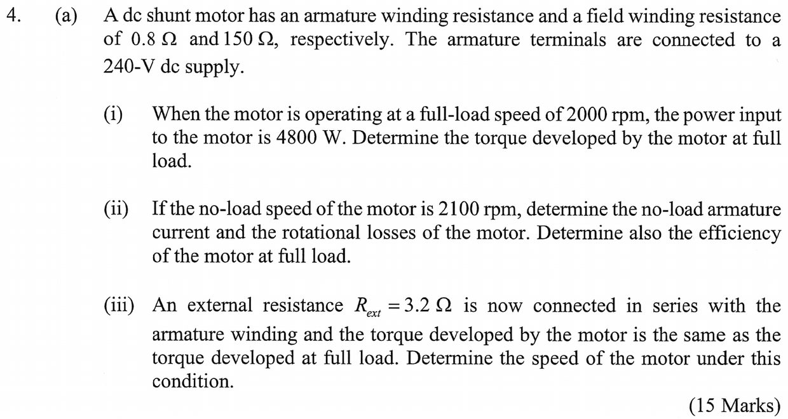
Question (15 marks): A dc shunt motor has an armature winding resistance of 0.8 Ω and a field winding resistance of 150 Ω. The armature terminals are connected to a 240-V dc supply. (i) When the motor is operating at a full-load speed of 2000 rpm, the power input to the motor is 4800 W. Determine the torque developed by the motor at full load. (ii) If the no-load speed of the motor is 2100 rpm, determine the no-load armature current and the rotational losses of the motor. Determine also the efficiency of the motor at full load. (iii) An external resistance Rext = 3.2 Ω is now connected in series with the armature winding and the torque developed by the motor is the same as the torque developed at full load. Determine the speed of the motor under this condition.
What is really being asked. A standard shunt-motor chain. The key facts: the field winding is wired straight across the 240 V supply, so its current (and therefore the flux) is fixed whatever the load does; the supply current then splits into a field part and an armature part; and the back-EMF is what the spinning armature “pushes back” with. Everything else follows from comparing operating points with “same flux”.
Step 1 (part i) — currents and back-EMF at full load. The input power gives the line current; subtract the field current to find what the armature carries; then the armature loop equation gives EA.
EA = VT − IARA = 240 − 18.4(0.8) = 225.28 V
Pdev = EAIA = 225.28 × 18.4 = 4145.2 W ωm = 2π(2000)/60 = 209.44 rad/s
Tdev = Pdev/ωm = 4145.2/209.44 = 19.79 N·m
| VT | terminal voltage, 240 V, across both the armature and the field. |
|---|---|
| IL, IF, IA | line, field and armature currents: IL = IA + IF for a shunt machine (field and armature in parallel). |
| EA | back-EMF generated in the armature, EA = Kφωm. The supply must overcome it plus the IARA drop: VT = EA + IARA. |
| Pdev | electrical power converted to mechanical, EAIA = Tdevωm. It is before rotational losses are removed. |
Step 2 (part ii) — no-load current and rotational loss. Same supply and same field current means the same flux, so EA is proportional to speed. At no load the motor only has to spin itself, so the electrical power it converts equals the rotational loss.
IA,nl = (VT − EA,nl)/RA = (240 − 236.54)/0.8 = 4.32 A
Prot = Pdev,nl = EA,nlIA,nl = 236.54 × 4.32 = 1022 W
The rotational loss is assumed to be the same at full load (the course’s standard approximation, although the speed differs by 5 %). Then:
η = Pout/Pin = 3123/4800 = 65.1 %
Step 3 (part iii) — resistor in series with the armature, same torque. The field winding is still across the 240 V supply, so the flux is unchanged. Torque is KφIA; with Kφ unchanged, equal torque means equal armature current, IA = 18.4 A. But now the armature loop has RA + Rext = 4.0 Ω in it, so more of the 240 V is eaten by resistance and less is left for the back-EMF.
n3 = nfl × EA3/EA,fl = 2000 × 166.4/225.28 = 1477 rpm
Sanity check. (1) Loss budget at full load: IA2RA = 270.8 W, IF2RF = 384 W, Prot = 1021.9 W; the sum 1676.7 W equals Pin − Pout = 4800 − 3123.3 ✓. (2) Second route for (iii): Kφ = EA/ωm = 225.28/209.44 = 1.0756 V·s/rad, so ω3 = 166.4/1.0756 = 154.7 rad/s = 1477 rpm ✓, and T = KφIA = 19.79 N·m again. (3) The line current is unchanged (IL = 20 A), so Pin is still 4800 W, but Pdev drops to 166.4 × 18.4 = 3062 W, and 18.42(3.2) = 1083 W is wasted as heat in Rext: a slow, inefficient way to control speed. The no-load speed (2100) is above full-load speed (2000) as it should be.
Notes to write down
- Shunt motor recipe: IF = VT/RF → IA = IL − IF → EA = VT − IARA → Pdev = EAIA → T = Pdev/ωm (ω = 2πn/60). Trap: Pin/VT is IL, not IA.
- Constant flux (field across the supply): EA ∝ n and T ∝ IA. No-load: Prot = EA,nlIA,nl; efficiency uses Pout = Pdev − Prot over Pin = VTIL.
- Armature series Rext at equal torque: same IA, EA = VT − IA(RA+Rext), speed scales with EA. Speed goes DOWN (opposite to field weakening, which speeds the motor up).
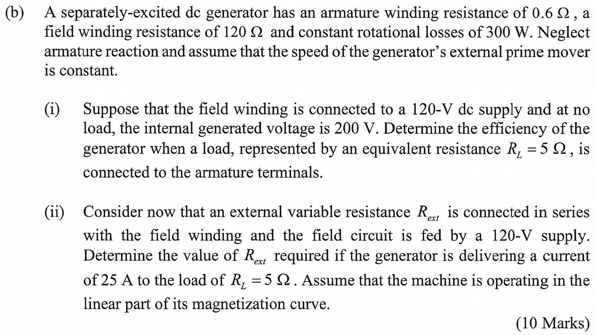
Question (10 marks): A separately-excited dc generator has an armature winding resistance of 0.6 Ω, a field winding resistance of 120 Ω and constant rotational losses of 300 W. Neglect armature reaction and assume that the speed of the generator’s external prime mover is constant. (i) Suppose that the field winding is connected to a 120-V dc supply and at no load the internal generated voltage is 200 V. Determine the efficiency of the generator when a load, represented by an equivalent resistance RL = 5 Ω, is connected to the armature terminals. (ii) Consider now that an external variable resistance Rext is connected in series with the field winding and the field circuit is fed by a 120-V supply. Determine the value of Rext required if the generator is delivering a current of 25 A to the load of RL = 5 Ω. Assume that the machine is operating in the linear part of its magnetization curve.
What is really being asked. A generator is a motor in reverse: a prime mover spins the armature, which makes an internal voltage EA; some of that is lost across RA, and the rest, VT, drives the load. Part (i) is a power-accounting question (watts in vs watts out). Part (ii) is a “what field current do I need?” question: with the speed fixed and the magnetisation linear, EA is simply proportional to the field current.
Step 1 (part i) — field current and load current. No-load EA = 200 V is the voltage the field makes at IF = 120/120 = 1 A and this speed. Under load, the armature current flows through RA in series with RL.
IA = EA/(RA + RL) = 200/5.6 = 35.71 A VT = IARL = 178.57 V
| EA | internal generated voltage, EA = Kφω. Stays at 200 V because neither the field current nor the speed changes and armature reaction is neglected. |
|---|---|
| VT | terminal voltage across the load: VT = EA − IARA. It sags below EA by the armature drop (21.4 V here). |
| IA | armature current, equal to the load current for a separately-excited generator (the field has its own supply). |
Step 2 (part i) — power in, power out.
Pdev = EAIA = 200 × 35.71 = 7142.9 W Pshaft = Pdev + Prot = 7142.9 + 300 = 7442.9 W
Field supply power = VFIF = 120 W
η = Pout/(Pshaft + VFIF) = 6377.6/7562.9 = 84.3 %
Convention used: because the field is fed by a separate 120 V source, that 120 W is real input power the whole system consumes, so it is counted on the input side (the course’s convention for separately-excited machines). If the question had meant only the mechanical input, η = 6377.6/7442.9 = 85.7 %; state which you use.
Step 3 (part ii) — what EA is needed? Work backwards from the load: 25 A through RL = 5 Ω fixes the terminal voltage, and adding the armature drop gives the internal voltage.
Step 4 (part ii) — field current and Rext. The speed is constant and the magnetisation is linear, so EA ∝ IF. We know one point (1 A gives 200 V), so 140 V needs 0.7 A.
RF,total = VF/IF2 = 120/0.7 = 171.43 Ω ⇒ Rext = 171.43 − 120 = 51.4 Ω
Sanity check. (1) Loss budget for (i): IA2RA = 765.3 W + Prot 300 W + field 120 W = 1185.3 W = (Pshaft + 120) − Pout = 7562.9 − 6377.6 ✓. (2) Forward check for (ii): with Rext = 51.43 Ω the field current is 0.7 A, so EA = 140 V, IA = 140/(0.6 + 5) = 25 A ✓, exactly the requested load current. (3) Direction: the load is lighter than before (25 A against 35.7 A), so less EMF is needed and a positive Rext is required to weaken the field; a negative answer would signal a slip.
Notes to write down
- Sep-ex generator: VT = EA − IARA, IA = IL. With a resistive load, IA = EA/(RA+RL) and VT = IARL.
- Efficiency: η = VTIA / (EAIA + Prot + VFIF). Trap: forgetting the field supply (gives 85.7 % instead of 84.3 %); say which convention you use.
- Constant speed + linear magnetisation: EA ∝ IF (and EA ∝ n at constant IF). Target voltage: find EA = VT + IARA first, scale IF, then Rext = VF/IF − RF.
- Field Rext only ever lowers IF (and EA); a lower required EA than the base case means Rext > 0.
📄 Paper 4 — 2024-2025 Semester 2
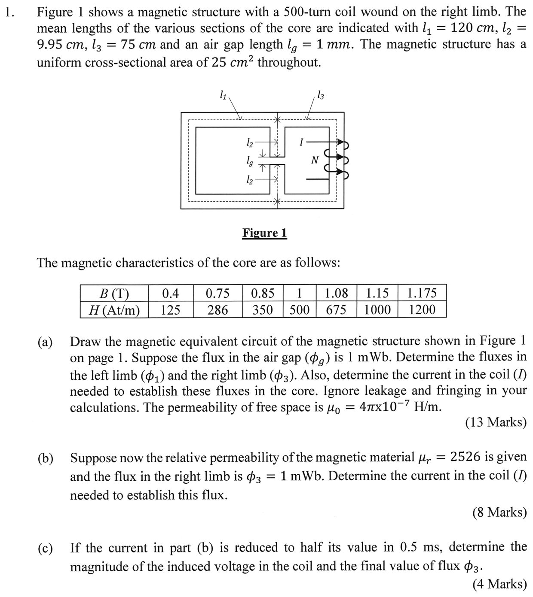
Question: A 3-limb core has a 500-turn coil on the RIGHT limb; a 1mm gap sits in the CENTER limb (split into two 9.95cm core segments around it). Left limb l₁=120cm, right (coil) limb l₃=75cm, area 25cm² throughout, B-H table given. (a) Given the air-gap flux φ_g=1mWb: find the fluxes in the left and right limbs, and the coil current. (b) With a linear μᵣ=2526 instead, and φ₃(right limb)=1mWb: find the coil current. (c) If the current from (b) is halved over 0.5ms: find the induced voltage and the final flux.
Step 1 — this time the coil is on the RIGHT limb and the gap is in the CENTER limb, so center∥left are the parallel pair, right(coil) is the series branch — the mirror image of Paper 2 Q1(a)'s layout. Start from the given gap flux (which is also the whole center limb's flux, since it's all one series path within that branch).
H_gap=B_center/μ₀ → F_gap≈318.3 At F₁₃(shared parallel mmf) = F_center,core+F_gap ≈ 343.2 At
Step 2 — left limb shares that same mmf (parallel), work back to its B via the table; then the coil (right) limb carries the sum (KCL).
Φ₃(coil limb) = Φ₁+φ_g = 2.875 mWb B₃=1.15T → H₃=1000 At/m (table) → F₃,core=750 At
Step 3 (part b) — same topology, but now linear (μᵣ=2526), and the TARGET flux has changed to φ₃=1mWb directly (a different, smaller operating point than part (a)). Rebuild the reluctances with μᵣ instead of the table, then solve for I directly from φ₃=NI/ℛ_total.
I = φ₃ℛ_total/N ≈ 0.399 A
Step 4 (part c) — halving the current halves the flux (still linear), so use Faraday's Law directly on the CHANGE.
Note how large that induced voltage is for such a small current change — that's the direct consequence of switching the current in a fraction of a millisecond; the SPEED of the change matters just as much as its size.
Notes to write down
- Two consecutive sub-parts using the "same" quantity (φ₃) don't necessarily mean the same operating point — re-read carefully whether it's the SAME value as before or a new target.
- Faraday's Law for a step change (e=NΔΦ/Δt) needs no reluctance or inductance at all if you already have both flux values — it's a pure "before vs after" calculation.
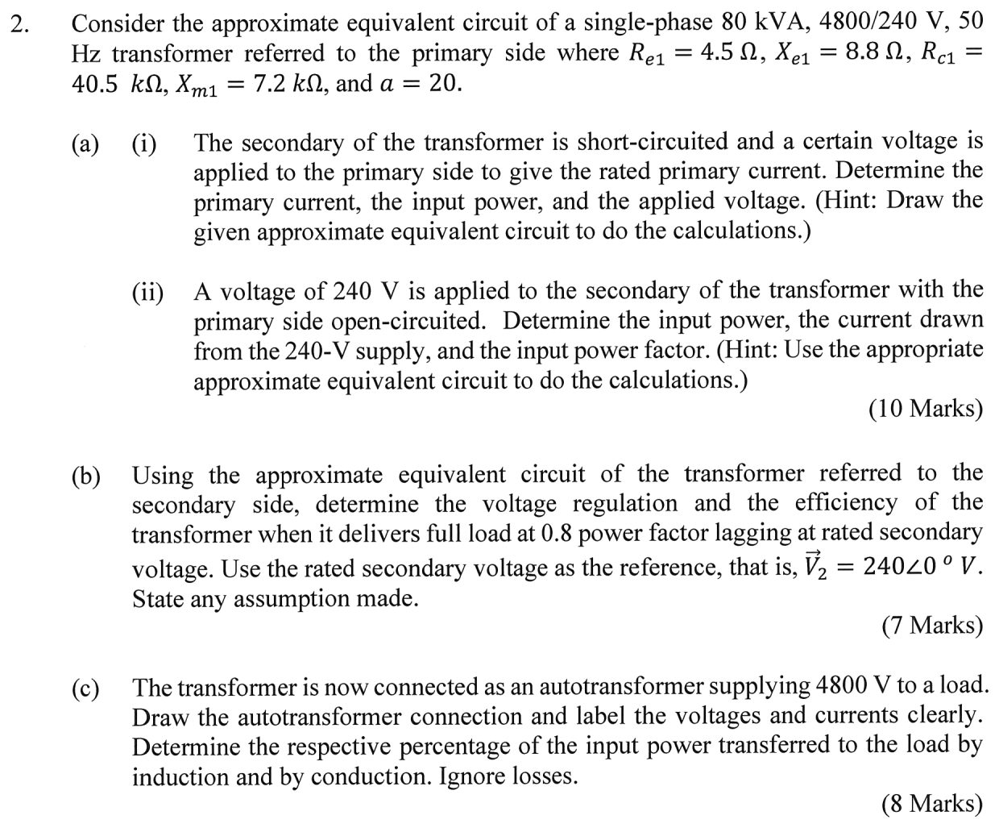
Question: An 80kVA, 4800/240V transformer has approximate equivalent circuit parameters referred to the primary: Re1=4.5Ω, Xe1=8.8Ω, Rc1=40.5kΩ, Xm1=7.2kΩ, a=20. (a)(i) Predict what an SC test (secondary shorted, rated primary current) would read. (ii) Predict what an OC test (240V applied to secondary, primary open) would read. (b) Referred to the secondary, find VR and efficiency at full load, 0.8PF lagging, rated secondary voltage. (c) The transformer is used as an autotransformer supplying 4800V to a load from a 5040V source (i.e. using the full 4800V+240V winding as input, tapping the load across just the 4800V portion). Find the percentage of input power transferred by induction vs. by conduction.
Step 1 (a)(i) — an SC test IS just the series impedance alone, since the shunt branch (tens of kΩ) draws negligible current compared to the series path (a few Ω) when the far end is shorted. Just apply rated primary current straight through Re1+jXe1.
V_applied ≈ 16.67×9.884 ≈ 164.7 V P_in = I₁²Re1 ≈ 1250 W
Step 2 (a)(ii) — with the primary genuinely OPEN, current can't flow through the series branch at all (that path dead-ends at the open primary) — it flows ONLY through the shunt (magnetizing) branch, referred down to the secondary.
I_core=240/101.25≈2.370A I_mag=240/18≈13.33A I_total≈13.54 A
P_in=240²/101.25≈568.9 W PF ≈ 0.175 (very low — almost pure magnetizing current, as expected for excitation)
Step 3 (b) — standard full-load VR/efficiency, referred secondary.
VR ≈ 3.09% P_out=64,000W, P_cu=1250W (matches part (a)(i)'s SC-predicted value exactly — good check), P_core≈604.6W η ≈ 97.2%
Step 4 (c) — induction vs. conduction split. With the FULL winding (4800+240=5040V) as the source side and just the 4800V portion tapped as the load side, the "common" (4800V) winding physically CONDUCTS power straight through by direct wire connection, while the "series" (240V) winding's contribution only reaches the load by transformer INDUCTION. The split is exactly the ratio of the two voltages.
%induction = 1 − 0.952 ≈ 4.76%
The rated copper loss from step 3 (1250W) landing EXACTLY on the SC-test-predicted power from step 1 is a strong independent check that both calculations are self-consistent.
Notes to write down
- "Primary open" during an OC-from-secondary test means the series branch carries ZERO current — all of it goes through the shunt branch alone. Don't add a series-impedance drop in this case.
- Autotransformer induction/conduction split: %conduction = V_low/V_high (the ratio of the SMALLER winding voltage to the TOTAL/larger one) — an easy formula to misremember backward, so sanity-check that the induction share is always the SMALL number (it's only the added winding's contribution).
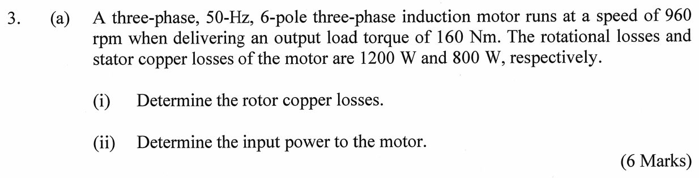
Question (6 marks): A three-phase, 50-Hz, 6-pole induction motor runs at 960 rpm while delivering an output (load) torque of 160 N·m. The rotational losses are 1200 W and the stator copper losses are 800 W. (i) Determine the rotor copper losses. (ii) Determine the input power to the motor.
Step 1 — what is really being asked. You are given the power at the very END of the chain (the shaft torque at 960 rpm) and two losses. The trick is to walk backwards up the power-flow chain, adding each loss back in: shaft output → add rotational loss → developed power → undo the slip fraction → air-gap power → add stator copper → electrical input. Rotor copper loss falls out on the way as the slip-sized slice of the air-gap power.
Pout = Tload·ωm Pdev = Pout + Prot Pag = Pdev/(1−s) Pcu2 = s·Pag Pin = Pag + Pcu1
| Tload, ωm | Shaft (load) torque in N·m and rotor speed in rad/s, ωm = 2πn/60. Their product is the useful mechanical power at the shaft, Pout. Valid because the torque the load feels is what is left AFTER friction and windage. |
|---|---|
| Prot | Rotational loss (friction + windage, with core loss lumped in) in W; it is taken off the developed power on its way to the shaft, so we add it back going backwards. |
| Pdev | Mechanical power developed inside the rotor (= Tdevωm = (1−s)Pag); it is bigger than Pout by exactly Prot. |
| s | Slip = (ns − n)/ns, a fraction. It tells you how the air-gap power is split: s goes to rotor heat, (1−s) becomes mechanical power. |
| Pag | Air-gap power: everything that crosses from the stator to the rotor. Stator copper loss is the only thing taken off between Pin and Pag (core loss is not drawn separately in this course). |
Step 2 — slip and shaft power. ns = 120f/p = 120(50)/6 = 1000 rpm, so s = (1000 − 960)/1000 = 0.04. ωm = 2π(960)/60 = 100.53 rad/s. Pout = 160 × 100.53 = 16 085 W.
Step 3 — walk back up the chain.
Pag = 17 285/(1 − 0.04) = 17 285/0.96 = 18 005 W
(i) Pcu2 = s·Pag = 0.04 × 18 005 = 720 W (check: Pag − Pdev = 18 005 − 17 285 = 720 W ✓)
(ii) Pin = Pag + Pcu1 = 18 005 + 800 = 18 805 W ≈ 18.8 kW
Sanity check. Input (18.8 kW) > air gap (18.0 kW) > developed (17.3 kW) > output (16.1 kW): every step shrinks, as it must. Efficiency = 16 085/18 805 = 85.5 %, believable for a small motor. The rotor copper loss is only 4 % of the air-gap power, matching s = 0.04.
Notes to write down
- Pcu2 : Pdev : Pag = s : (1−s) : 1. Once you have any one of the three, you have the other two.
- Given a LOAD (shaft) torque, Pout = Tloadωm and you must ADD Prot to get Pdev. (If the DEVELOPED torque were given, Pdev = Tdevωm directly.)
- Trap: Pag = Pdev/(1−s), not Pdev(1−s). Dividing by a number less than 1 makes the answer bigger, as it must.
- Rotor copper loss is NOT given by any resistance here: no R2 is stated, so you must get it from s·Pag.
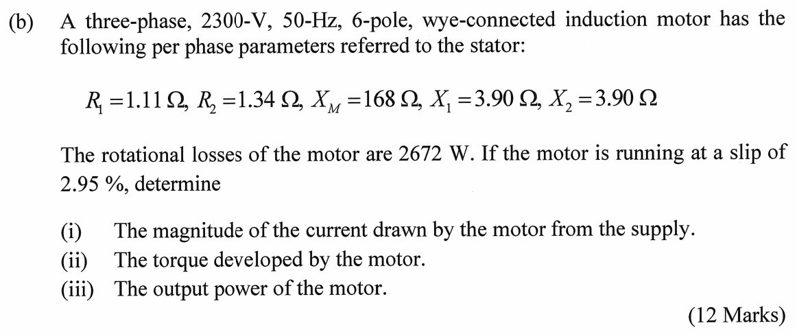
Question (12 marks): A three-phase, 2300-V, 50-Hz, 6-pole, wye-connected induction motor has the following per-phase parameters referred to the stator: R1 = 1.11 Ω, R2 = 1.34 Ω, XM = 168 Ω, X1 = 3.90 Ω, X2 = 3.90 Ω. The rotational losses are 2672 W and the motor runs at a slip of 2.95 %. Determine (i) the magnitude of the current drawn from the supply, (ii) the torque developed, (iii) the output power.
Step 1 — what is really being asked. This is the standard "equivalent circuit at a given slip" question. The plan: (1) turn the three-phase motor into ONE phase (wye, so the phase voltage is the line voltage divided by √3); (2) work out the one resistor that carries the slip, R2/s; (3) collapse the circuit into a single input impedance Zin and get I1 = Vφ/Zin; (4) use the power-flow chain for torque and output. No core-loss resistor is drawn (the 2672 W rotational loss already lumps it in), so the circuit is just R1, X1, then XM in parallel with (R2/s + jX2).
Pin = 3I1²·Re(Zin) Pcu1 = 3I1²R1 Pag = Pin − Pcu1 Tdev = Pag/ωs Pout = (1−s)Pag − Prot
| Vφ | Voltage across one phase of the equivalent circuit. For a wye connection each phase sees the line voltage over √3. The phase current IS the line current in a wye. |
|---|---|
| R2/s | Rotor resistance seen from the stator. It bundles the rotor heat (R2) and the mechanical load (R2(1−s)/s) into one resistor; at small slip it is large, so the rotor branch draws little current. s must be a FRACTION (0.0295, not 2.95). |
| jXM | Magnetising reactance: the sideways branch that carries the current needed to set up the air-gap flux. It does no useful torque work. |
| jX1, jX2 | Stator and rotor leakage reactances (flux that does not cross the gap). |
| ωs | Synchronous speed in rad/s = 2πns/60. Dividing air-gap power by ωs (not ωm) gives the developed torque. |
Step 2 — the numbers that never change. ns = 120(50)/6 = 1000 rpm, ωs = 2π(1000)/60 = 104.72 rad/s, rotor speed n = 1000(1 − 0.0295) = 970.5 rpm. Vφ = 2300/√3 = 1327.9 V. R2/s = 1.34/0.0295 = 45.424 Ω.
Step 3 — collapse the circuit (part i). The rotor branch is Z2 = 45.424 + j3.90 Ω. Put it in parallel with jXM = j168:
Zin = (1.11 + j3.90) + (40.554 + j14.528) = 41.664 + j18.428 Ω = 45.558 ∠23.86° Ω
I1 = 1327.9/45.558 = 29.15 A (lagging Vφ by 23.86°, so pf = cos 23.86° = 0.915 lagging)
Step 4 — power flow (parts ii and iii).
Pcu1 = 3(29.148)²(1.11) = 2829 W ⇒ Pag = 106 193 − 2829 = 103 364 W
(ii) Tdev = Pag/ωs = 103 364/104.72 = 987.1 N·m
Pdev = (1 − 0.0295)(103 364) = 100 315 W ⇒ (iii) Pout = 100 315 − 2672 = 97 643 W ≈ 97.6 kW
Step 5 — a second route to confirm. Voltage across the magnetising branch (air-gap voltage): Vag = Vφ − I1(R1 + jX1) = 1255.6 V. Rotor current I2 = Vag/Z2 = 1255.6/45.592 = 27.54 A, so Pag = 3I2²(R2/s) = 3(27.54)²(45.424) = 103 364 W ✓ (same). A Thevenin calculation of T at s = 0.0295 also gives 987.1 N·m ✓. Also Pdev/ωm = 100 315/101.63 = 987.1 N·m ✓ (Tdev = Pdev/ωm = Pag/ωs).
Sanity check. At 2.95 % slip the motor is near full load: pf 0.915 lagging and efficiency η = 97 643/106 193 = 91.9 % are typical for a 100-kW-class machine. The rotor copper loss is s·Pag = 3049 W, about 3 % of Pag. The magnetising current Vag/XM = 7.5 A is about a quarter of I1, typical.
Notes to write down
- Wye: Vφ = VL/√3 and Iphase = Iline. Using 2300 V directly is the classic mark-losing slip.
- Zin = R1 + jX1 + jXM∥(R2/s + jX2); do the parallel with complex arithmetic (product over sum) and keep 4–5 digits.
- Tdev = Pag/ωs where Pag = Pin − 3I1²R1 (= 3I2²R2/s). Output power subtracts rotational loss AFTER applying (1−s).
- R2/s uses s as a fraction: 1.34/0.0295 = 45.4 Ω, not 1.34/2.95.
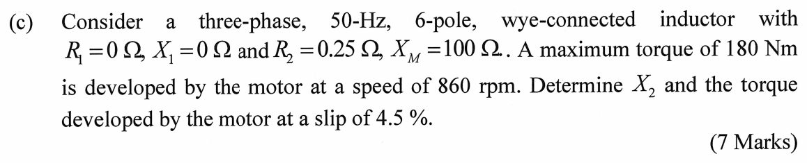
Question (7 marks): Consider a three-phase, 50-Hz, 6-pole, wye-connected induction motor (the paper misprints it as "inductor") with R1 = 0 Ω, X1 = 0 Ω, R2 = 0.25 Ω and XM = 100 Ω. A maximum torque of 180 N·m is developed by the motor at a speed of 860 rpm. Determine X2 and the torque developed by the motor at a slip of 4.5 %.
Step 1 — what is really being asked. You are NOT told the supply voltage, so you cannot compute torque from scratch. The hint is in the data: you know the slip and torque at the PEAK of the curve. With R1 = X1 = 0 the stator impedance is zero, so the supply sits directly across the rotor branch, and the whole torque curve has a universal shape. Knowing the peak (Tmax, smax) fixes the whole curve, so you can find the torque at any other slip as a RATIO to the peak. The voltage cancels.
smax = R2/X2 Tmax = 3Vφ²/(2ωsX2) T/Tmax = 2·s·smax / (s² + smax²)
| smax | Slip at which torque peaks. With R1 = X1 = 0, the Thevenin impedance is zero, so smax = R2/√(0² + (0 + X2)²) = R2/X2: the point where the rotor resistance R2/s equals its leakage reactance X2. |
|---|---|
| Tmax | Pull-out (breakdown) torque, 180 N·m here. It does not depend on R2 at all, only on Vφ² and X2. |
| s | The slip at which you want the torque (0.045). Both slips are fractions. |
| XM | 100 Ω is a distractor: with the source directly on the rotor branch, XM carries only magnetising current and takes no part in the torque. |
Step 2 — where the ratio comes from. Multiply the top and bottom of T(s) by s²/X2² and use smax = R2/X2: T(s) = [3Vφ²/(ωsX2)] · s·smax/(smax² + s²). At s = smax this becomes [3Vφ²/(ωsX2)]·(1/2) = Tmax. Dividing gives T/Tmax = 2 s smax/(smax² + s²).
Step 3 — find X2. ns = 120(50)/6 = 1000 rpm. Maximum torque at 860 rpm means smax = (1000 − 860)/1000 = 0.14.
Step 4 — torque at s = 0.045.
T = 0.5827 × 180 = 104.9 N·m
Step 5 — a second route. Back out the voltage from Tmax: Vφ² = 2ωsX2Tmax/3 = 2(104.72)(1.786)(180)/3 ⇒ Vφ = 149.8 V (VL ≈ 259 V, a plausible small motor). Then T(0.045) = 3(149.8)²(5.556)/{104.72[(5.556)² + (1.786)²]} = 104.9 N·m ✓ (R2/s = 0.25/0.045 = 5.556 Ω).
Sanity check. s = 0.045 lies on the stable side (below smax = 0.14), so T must be less than Tmax: 104.9 < 180 ✓. The ratio 0.58 at u = smax/s = 3.1 follows 2u/(1+u²) = 6.22/10.68 = 0.583. X2 = 1.79 Ω is well above R2 = 0.25 Ω, as typical for low-resistance cage rotors, which peak at small slip.
Notes to write down
- R1 = X1 = 0 ⇒ smax = R2/X2 and T/Tmax = 2·s·smax/(s² + smax²). No voltage needed.
- Get smax from the speed at maximum torque: smax = (ns − n)/ns, with ns = 120f/p.
- Trap: XM is irrelevant when R1 = X1 = 0. Do not use it.
- The ratio formula is symmetric in s and smax: sanity-check that the answer is < Tmax and larger than T at a slip further from smax.
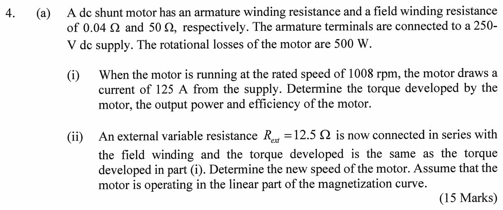
Question (15 marks): A dc shunt motor has an armature resistance of 0.04 Ω and a field resistance of 50 Ω. The armature terminals are connected to a 250-V dc supply. The rotational losses are 500 W. (i) At the rated speed of 1008 rpm the motor draws 125 A from the supply. Determine the torque developed, the output power and the efficiency. (ii) An external variable resistance Rext = 12.5 Ω is now connected in series with the field winding and the torque developed is the same as in part (i). Determine the new speed. Assume operation in the linear part of the magnetisation curve.
Step 1 — what is really being asked. Part (i) is the standard recipe: split the line current into field and armature parts, find the back-emf, then the power and torque. Part (ii) is a "new operating point" question: adding resistance to the FIELD weakens the flux, the motor still has to make the same torque, so it needs MORE armature current, and then you must find the speed at which the back-emf matches. You never need K itself; compare "new" with "old" by ratios.
Pout = Pdev − Prot η = Pout/(VTIL)
New point (linear flux φ ∝ IF): EA2/EA1 = (IF2/IF1)(n2/n1) and T2/T1 = (IF2IA2)/(IF1IA1)
| IF | Field current (A). In a shunt motor the field winding sits across the supply, so IF = VT/RF. With Rext in series, RF becomes RF + Rext. |
|---|---|
| IL, IA | Line current drawn from the supply and armature current. They differ by the field current, IL = IA + IF. |
| EA | Back-emf of the armature (V). It is EA = Kφωm; the supply must beat it to push armature current through RA, so EA = VT − IARA. |
| Pdev, Tdev | Electrical-to-mechanical conversion power (EAIA) and the torque it makes, Tdev = Pdev/ωm = KφIA. "Torque developed" means this one, before rotational losses. |
| φ ∝ IF | Valid ONLY in the linear (unsaturated) part of the magnetisation curve, which the question tells you to assume. Then EA ∝ IF·n and T ∝ IF·IA. |
Part (i).
EA1 = 250 − 120(0.04) = 250 − 4.8 = 245.2 V
Pdev = 245.2 × 120 = 29 424 W ωm = 2π(1008)/60 = 105.56 rad/s
Tdev = 29 424/105.56 = 278.7 N·m
Pout = 29 424 − 500 = 28 924 W ≈ 28.9 kW
Pin = 250 × 125 = 31 250 W η = 28 924/31 250 = 92.6 %
Part (ii) — plan before arithmetic. (1) New field current from the larger field resistance. (2) Equal torque and weaker flux ⇒ new armature current. (3) New back-emf from the armature loop. (4) New speed from the EA ratio.
T same ⇒ IF2IA2 = IF1IA1 ⇒ IA2 = 120 × (5/4) = 150 A
EA2 = 250 − 150(0.04) = 244 V
n2 = n1 × (EA2/EA1) × (IF1/IF2) = 1008 × (244/245.2) × (5/4) = 1254 rpm
Second route. Define K′ = EA1/(IF1n1) = 245.2/(5 × 1008) = 0.04865 V per A·rpm. Then n2 = EA2/(K′IF2) = 244/(0.04865 × 4) = 1253.8 rpm ✓. In radians: Kφ1 = EA1/ω1 = 2.323 V·s/rad; Kφ2 = 0.8 × 2.323 = 1.858; T = Kφ1IA1 = 278.7 and Kφ2IA2 = 278.7 ✓ (equal torque); ω2 = EA2/Kφ2 = 131.3 rad/s = 1253.8 rpm ✓.
Sanity check. Loss ledger for (i): armature copper 120²(0.04) = 576 W, field copper 5²(50) = 1250 W, rotational 500 W, total 2326 W = Pin − Pout = 31 250 − 28 924 ✓. For (ii), field down 20 % ⇒ speed up about 24 % (1008 → 1254), slightly less than the ideal factor 1/0.8 = 1.25 (which would give 1260 rpm) because EA also drops by 0.5 % when IA rises. The input current rises to 150 + 4 = 154 A.
Notes to write down
- Shunt motor: IF = VT/RF, IA = IL − IF, EA = VT − IARA, Tdev = EAIA/ωm (developed torque, before rotational loss).
- Linear flux: EA2/EA1 = (IF2/IF1)(n2/n1) and T2/T1 = (IF2IA2)/(IF1IA1).
- Trap: with Rext in the FIELD, the armature current changes at equal torque (IA2 = 150 A, not 120 A). Rext in the ARMATURE keeps flux fixed and equal torque means equal IA. Do not confuse them.
- Weaker field ⇒ higher speed (but more IA for the same torque). Always compute η with the whole line current VTIL, including the field current.
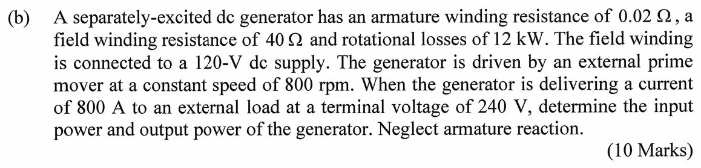
Question (10 marks): A separately-excited dc generator has an armature resistance of 0.02 Ω, a field resistance of 40 Ω and rotational losses of 12 kW. The field winding is connected to a 120-V dc supply. The generator is driven by an external prime mover at a constant 800 rpm. When it delivers 800 A to an external load at a terminal voltage of 240 V, determine the input power and output power of the generator. Neglect armature reaction.
Step 1 — what is really being asked. A generator has the power chain of a motor run backwards. Output is the easy end: voltage times current into the load. The input is whatever the prime mover must supply to deliver that output AND cover the losses. So start at the output, add the armature voltage drop to get the internal emf, convert to developed power, then add rotational loss to reach the shaft.
| VT, IL | Terminal voltage and current delivered to the load. In a separately-excited generator the armature carries all of the load current, so IA = IL (the field is fed from a different source). |
|---|---|
| EA | Internal generated emf. A generator loses some voltage in its own armature resistance, so the terminals see EA − IARA; going backwards, EA = VT + IARA. (Sign opposite to a motor.) |
| Pdev | Electrical power produced from mechanical power inside the armature, EAIA (= Tdevωm). |
| Prot | Rotational loss, 12 kW. The prime mover must supply it on top of Pdev. |
| VFIF | Power drawn by the separate field supply. It is an extra input in this machine (not from the shaft). |
Step 2 — numbers.
EA = 240 + 800(0.02) = 240 + 16 = 256 V
Pdev = 256 × 800 = 204 800 W
(Input) Pshaft = 204 800 + 12 000 = 216 800 W = 216.8 kW
IF = 120/40 = 3 A VFIF = 360 W ⇒ total input including the field supply = 216 800 + 360 = 217 160 W ≈ 217.2 kW
Interpretation note. "Input power" of the generator is the mechanical power the prime mover delivers: 216.8 kW. The course convention for a separately-excited machine also counts the field supply as a (small) input, which gives 217.16 kW; the two differ by only 0.17 %. State which one you use and show both. With the second convention η = 192/217.16 = 88.4 % (88.6 % if the field supply is ignored). The speed (800 rpm) is not needed for the powers; it only gives the shaft torque, T = 216 800/(2π×800/60) = 2588 N·m.
Sanity check. Loss ledger: 12.8 kW (armature copper: 800² × 0.02) + 12 kW (rotational) + 0.36 kW (field) = 25.16 kW, and 217.16 − 192 = 25.16 kW ✓. Input > output, as it must. EA (256 V) > VT (240 V) for a generator, the opposite of a motor.
Notes to write down
- Generator: EA = VT + IARA; motor: EA = VT − IARA. Get the sign from who is giving and who is receiving.
- Chain: Pshaft → (−Prot) → Pdev = EAIA → (−IA²RA) → Pout = VTIL.
- Separately excited: IA = IL and the field supply is an extra input, VFIF = 360 W here; state whether it is included.
- The speed is a distractor for power questions; it matters only for torque or if the field current changes.
📄 Paper 5 — 2025-2026 Semester 1
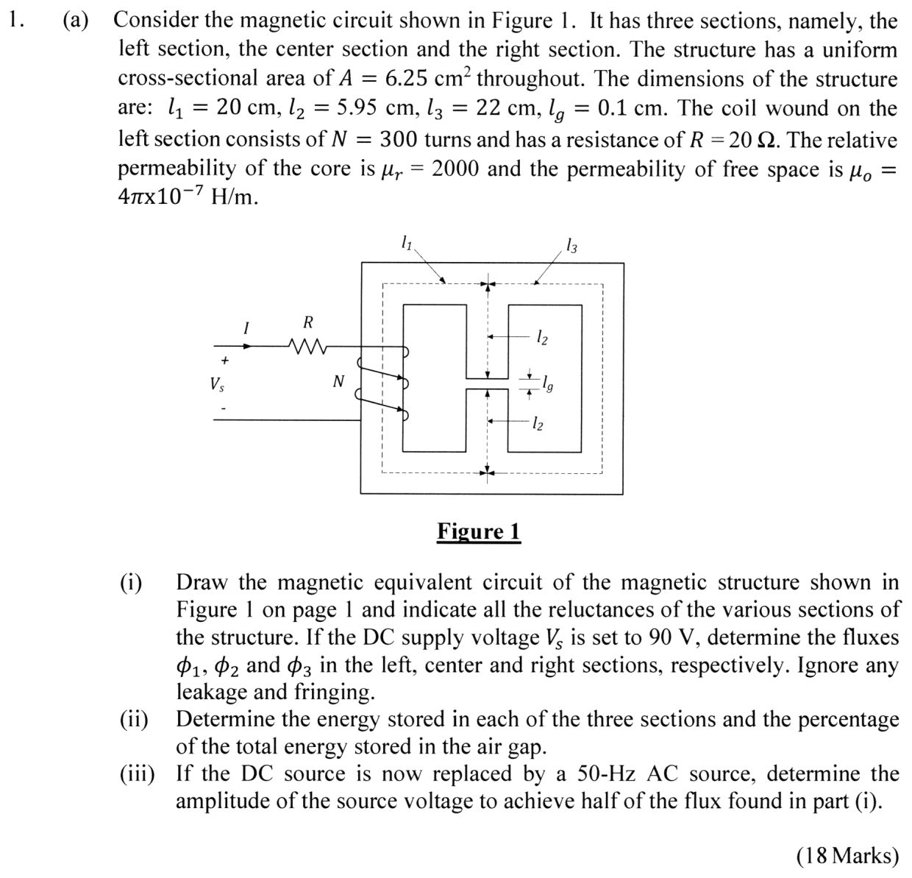
Question: A 3-limb core has a 300-turn coil (with 20Ω series resistance) on the LEFT limb, driven by a 90V DC supply. The center limb (2×5.95cm core segments around a 1mm gap) and right limb (22cm) are the parallel pair, area 6.25cm² throughout, μᵣ=2000. (i) Find the three fluxes. (ii) Find the energy stored in each of the three sections, and what percentage of the total is in the air gap. (iii) If the DC source is replaced by 50Hz AC, find the amplitude of source voltage needed to achieve HALF the flux found in part (i).
Step 1 — with a series RESISTOR explicitly given and a DC supply, find the current the plain way first (V=IR), since at DC steady-state the coil's own inductance drops out completely — exactly Week 3's DC-vs-AC lesson.
Step 2 — build the circuit (left=series/coil branch, center-with-gap∥right=parallel pair) and solve exactly as before.
Φ₁ = mmf/ℛ_total ≈ 5.311 mWb Φ₂ ≈ 0.500 mWb Φ₃ ≈ 4.811 mWb (check: Φ₂+Φ₃=5.311mWb=Φ₁ ✓)
Step 3 — energy per section, and the gap's share. Note the right limb here has much LOWER reluctance than the gap-laden center limb, so most of the flux — and a lot of the energy — actually ends up in the right limb this time, not the gap. This is a useful reminder that "the gap dominates" is a common pattern, not a law: it depends on the SPECIFIC reluctances in a given circuit.
E_gap,only≈0.159J % of total in the gap ≈ 4.43% (a much smaller share than the ~95% seen in Week 3's tutorial — because here the un-gapped right limb has even LOWER reluctance than the gapped center branch, soaking up most of the flux and energy instead)
Step 4 — AC re-target: half of Φ₁ from part (i), using the same coil and R.
Φ₁,target = 5.311/2 ≈ 2.655 mWb I_amplitude = Φ₁,target·ℛ_total/N = 2.25 A Vs,amplitude = I_amp×|Z| ≈ 254.3 V
Notes to write down
- "The air gap dominates the energy" is TRUE only when the gap-carrying branch has meaningfully higher reluctance than the alternative branches available — always check the actual numbers rather than assuming it every time.
- A DC coil problem with an explicit series resistance is solved with plain V=IR for current — the inductance/reluctance side only comes in via mmf=NI, not via any impedance.
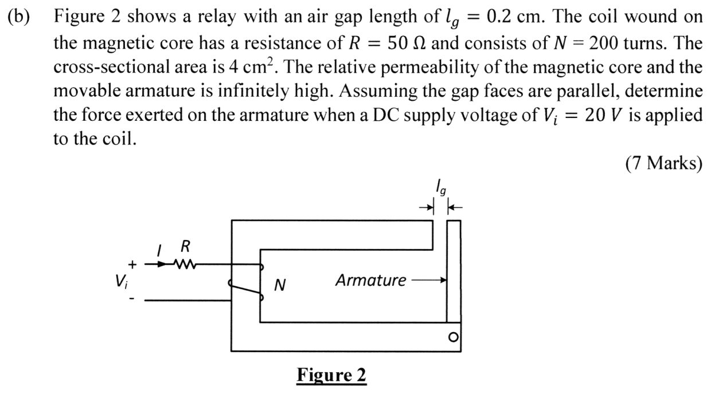
Question: A relay has a single 0.2cm air gap, a 200-turn coil (50Ω resistance), area 4cm², infinite core/armature permeability, driven by 20V DC. Find the force on the armature.
Step 1 — infinite μᵣ means all the reluctance is in the single air gap alone. DC steady state, so current is plain V/R.
Step 2 — force, for a SINGLE gap this time (not the double-gap "movable plate" pattern from earlier questions) — half the pulling area contributing, so half the force of the equivalent double-gap case for the same flux.
Worth flagging: this problem has only ONE stated air gap (unlike the U-shaped "movable plate" relays elsewhere in this course, which have two symmetric gaps and use F=Φ²/(μ₀A) instead — no factor of 2 in the denominator). Always check the figure for how many gaps are actually in the flux path before picking the formula.
Notes to write down
- Single-gap force: F=Φ²/(2μ₀A) = B²A/(2μ₀). Double (symmetric) gap: F=Φ²/(μ₀A) = B²A/μ₀ — exactly double, because both gaps close simultaneously and both contribute pull. Check the figure before assuming which one applies.
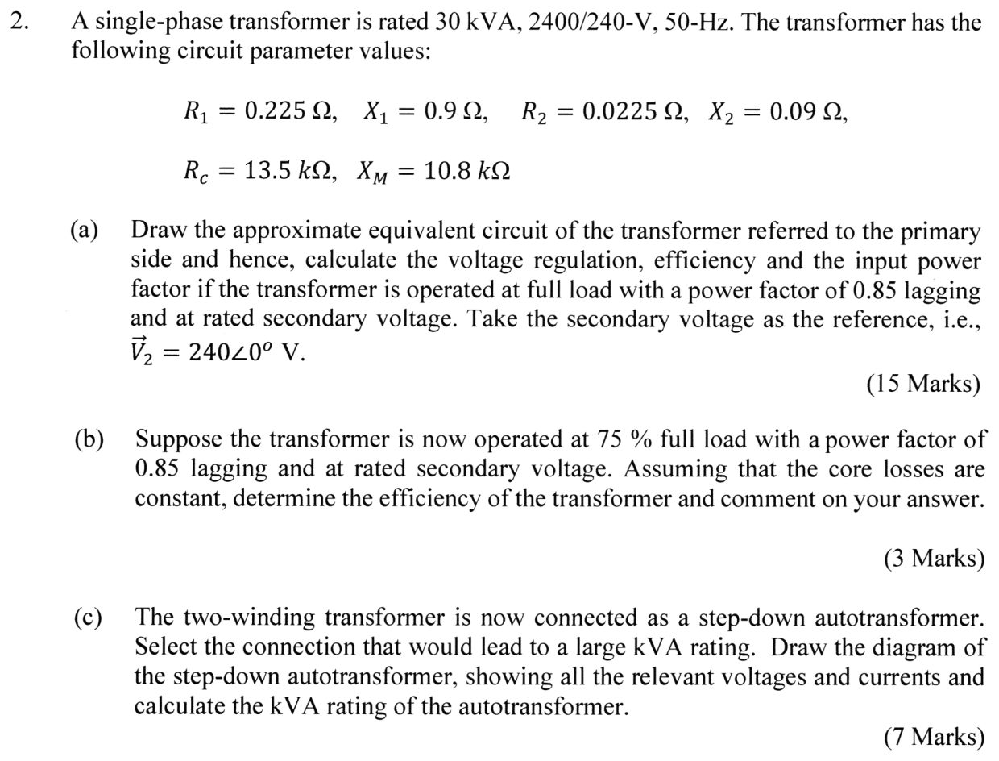
Question: A 30kVA, 2400/240V transformer has EXACT equivalent circuit parameters: R₁=0.225Ω, X₁=0.9Ω (primary), R₂=0.0225Ω, X₂=0.09Ω (secondary), Rc=13.5kΩ, Xm=10.8kΩ (both referred primary). (a) Convert to the approximate circuit referred to the primary; find VR, efficiency, and input PF at full load, 0.85PF lagging, rated secondary voltage. (b) At 75% load, same PF and voltage, assuming constant core loss: find the efficiency and comment. (c) The transformer is connected as a step-down autotransformer; choose the connection giving the LARGER kVA rating, and find that rating.
Step 1 — combining the exact circuit's separate primary/secondary series impedances into one approximate series impedance means referring R₂,X₂ to the primary and simply adding.
Step 2 — standard full-load calc referred primary.
Step 3 — 75% load, core loss held at the full-load value (460.4W, the stated assumption). Copper loss scales with load² (0.75²=0.5625).
Comment: efficiency at 75% load (96.6%) is slightly LOWER than at full load (96.8%) — which can look backward at first, since efficiency curves normally peak somewhere below full load, not above it. Checking where the true maximum-efficiency point actually sits explains it: x=√(P_core/P_cu,rated)≈1.09, i.e. the peak is at ~109% load — ABOVE full load for this particular unit. Since efficiency is still rising as load increases all the way up to 109%, both 75% and 100% load sit on the RISING part of the curve, with 100% naturally closer to the peak (and therefore higher) than 75%.
Step 4 (c) — choosing the autotransformer connection for the LARGER kVA rating. With this transformer's own two windings (2400V and 240V), the two possible connections give ratios of 2640/240=11 (additive, boosting to 2640V) versus 2400/240=10 (subtractive, dropping to 2160V) — additive wins.
S_auto(additive, 2640V↔2400V) = 2640×125 = 330 kVA (vs. 300kVA for the subtractive/2160V alternative — confirms additive is the larger choice)
Notes to write down
- Combining exact-circuit R₁,X₁ (primary) with R₂,X₂ (secondary) into ONE approximate impedance always means referring one side to the other first (×a² for the secondary values), then simply adding — don't average or combine them any other way.
- The maximum-efficiency load fraction x=√(P_core/P_cu,rated) can come out ABOVE 1 (i.e. above full load) — when it does, efficiency is still climbing at rated load, so any load fraction below 100% will show LOWER efficiency than full load, the opposite of the more commonly-seen case where the peak sits below full load.
- For the largest autotransformer kVA rating from a given pair of windings, always pick the ADDITIVE (boosting) connection over the subtractive one — same winding voltage difference, but a bigger Vhigh in the ratio S_auto/S_2w=Vhigh/(Vhigh−Vlow).
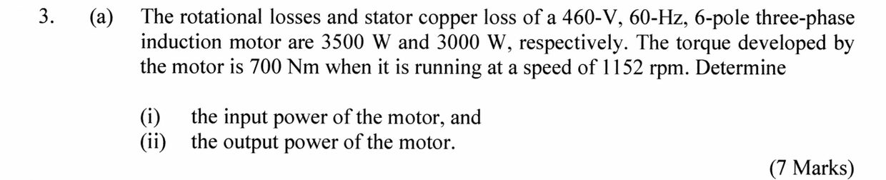
Question: The rotational losses and stator copper loss of a 460-V, 60-Hz, 6-pole three-phase induction motor are 3500 W and 3000 W respectively. The torque developed by the motor is 700 N·m when it is running at 1152 rpm. Determine (i) the input power of the motor and (ii) the output power of the motor. (7 marks)
What is it really asking? A motor swallows electrical power at the stator terminals and hands mechanical power to the shaft. Between the two, power is "taxed" at several checkpoints. We are told the torque the machine develops inside (Tdev) and its speed, so we can compute the mechanical power developed, then walk backwards up the chain to the input (adding the taxes) and forwards to the shaft (subtracting the taxes).
Step 1 — slip. The rotating field turns at synchronous speed; the rotor lags it a little. That lag is the slip, and it decides how the air-gap power splits between useful and wasted.
| f, p | supply frequency (Hz) and number of poles; they fix how fast the stator field rotates. |
|---|---|
| ns | synchronous speed in rpm = speed of the rotating magnetic field. |
| s | slip as a fraction. Zero at synchronous speed, 1 at standstill. Only the "lost" fraction s of the air-gap power is burnt in the rotor. |
Step 2 — mechanical power developed. Power = torque × angular speed, with the speed in rad/s (not rpm!).
| Tdev | torque developed by the electromagnetic interaction inside the machine (N·m). It is not the shaft torque, because friction and windage have not been subtracted yet. |
|---|---|
| ωm | rotor angular speed (rad/s). |
| Pdev | "developed" or "converted" mechanical power, the power that leaves the electrical side and enters the mechanical side. |
Step 3 — air-gap power. Of every watt that crosses the air gap into the rotor, the fraction s is lost as rotor copper heat and the fraction (1 − s) becomes Pdev. So we divide by (1 − s) to go back up.
Step 4 — (i) input power. Going backwards up the chain, the stator also keeps its own copper loss (3000 W, given). The lecturer lumps core loss into the rotational loss, so there is no separate core term.
Step 5 — (ii) output power. Going forwards, take off the rotational losses (friction, windage, core).
Sanity check. Efficiency η = 80 946/90 965 = 89.0 %, a believable figure for a ~100 kW induction motor; the losses add up: 3000 + 3519 + 3500 = 10 019 W = 90 965 − 80 946 ✓. Common trap: the question gives the developed torque, so use Tdevωm for Pdev, not for Pout; if it had said "load (shaft) torque", you would start from Pout instead and add Prot.
Notes to write down
- Power chain: Pin → (−Pcu1) → Pag → (−sPag) → Pdev = (1 − s)Pag → (−Prot) → Pout.
- Tdev = Pag/ωs = Pdev/ωm. Use ωs (synchronous speed) with air-gap power and ωm (actual speed) with developed power.
- Always convert rpm to rad/s with 2π/60 before multiplying by a torque.
- Trap: "developed torque" ≠ "shaft/load torque". The difference is the rotational loss.
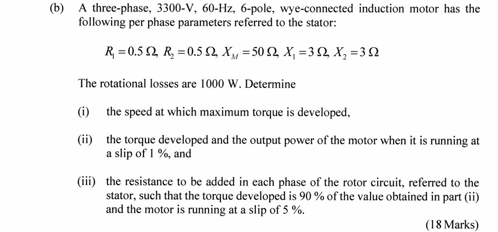
Question: A three-phase, 3300-V, 60-Hz, 6-pole, wye-connected induction motor has the following per-phase parameters referred to the stator: R1 = 0.5 Ω, R2 = 0.5 Ω, XM = 50 Ω, X1 = 3 Ω, X2 = 3 Ω. The rotational losses are 1000 W. Determine (i) the speed at which maximum torque is developed; (ii) the torque developed and the output power when running at a slip of 1 %; (iii) the resistance to be added in each phase of the rotor circuit (referred to the stator) such that the torque developed is 90 % of the value in part (ii) when the motor runs at a slip of 5 %. (18 marks)
What is it really asking? The whole question is about the torque–slip curve of one motor. (i) asks where the peak of that curve is; (ii) asks for one point on it; (iii) asks how to bend the curve (by adding rotor resistance) so that a different slip gives a prescribed torque. The tool that makes all three easy is the Thevenin equivalent: squash the source, R1, X1 and XM into one source Vth with one series impedance Zth feeding the rotor branch.
Step 1 — set-up per phase. The motor is wye-connected, so each phase sees the line voltage divided by √3. Synchronous speed fixes ωs.
Step 2 — Thevenin equivalent seen by the rotor branch. Looking back from the rotor terminals (where R2/s + jX2 connects), the supply and the stator impedance are in series, with XM as a shunt branch across the rotor terminals.
| Vth | the open-circuit voltage at the rotor terminals: a voltage-divider of Vφ between XM and the stator branch (volts, per phase). |
|---|---|
| Zth | the impedance seen looking back into the source with the source shorted: XM in parallel with (R1 + jX1) (ohms). |
| Rth, Xth | its real and imaginary parts. They behave like extra stator-side resistance and leakage reactance that the rotor "sees". |
Vth = 1905.26 × 50/|0.5 + j53| = 1905.26 × 50/53.002 = 1797.3 V
Step 3 — (i) slip and speed at maximum torque. The peak of the torque curve occurs where the rotor-branch resistance R2/s equals the magnitude of all the other impedance in the loop.
| smax | slip at which the torque is a maximum. It is proportional to R2 (more rotor resistance → peak moves to higher slip, i.e. lower speed). |
|---|---|
| R2 | rotor resistance referred to the stator (Ω). |
| Xth + X2 | total series reactance of the Thevenin loop: Thevenin reactance plus rotor leakage reactance. |
smax = 0.5/5.8513 = 0.0855 n = ns(1 − smax) = 1200(1 − 0.08545) = ≈ 1097 rpm
Step 4 — (ii) torque at s = 1 %. Rotor-branch resistance R2/s = 0.5/0.01 = 50 Ω.
| 3Vth²(R2/s)/[…] | air-gap power of all three phases: 3 × I2² × R2/s, with I2 = Vth/√[(Rth + R2/s)² + (Xth + X2)²]. |
|---|---|
| ωs | dividing air-gap power by synchronous speed turns it into torque. |
Pdev = T ωm = 1495.3 × 125.66(1 − 0.01) = 186 027 W Pout = 186 027 − 1000 = ≈ 185 027 W (≈ 185 kW)
Second route (direct circuit solve). Z2 = 50 + j3; jXM∥Z2 = 23.545 + j25.042; Zin = 0.5 + j3 + that = 24.045 + j28.042 Ω; I1 = 1905.26/|Zin| = 51.58 A; the current divider gives I2 = 35.39 A; Pag = 3(35.39)²(50) = 187 906 W; T = 187 906/125.66 = 1495.3 N·m ✓ (the same as Thevenin).
Step 5 — (iii) added rotor resistance. The target torque is 90 % of part (ii), at s = 5 %. The rotor resistance is now R2′ = 0.5 + Radd (unknown) and the slip is fixed, so the only unknown is x = R2′/s, the rotor-branch resistance. Put the target into the torque formula and solve for x.
3Vth² x = 169 116[(Rth + x)² + (Xth + X2)²] ⇒ x² + (2Rth − 3Vth²/169 116)x + (Rth² + 5.8344²) = 0
x² − 56.415x + 34.24 = 0 ⇒ x = 55.80 Ω or x = 0.614 Ω
A quadratic always gives two answers, because a given torque can be reached on both sides of the torque peak. Convert back with R2′ = x·s:
x = 0.614: R2′ = 0.0307 Ω ⇒ Radd = −0.469 Ω (negative, impossible: you cannot add a negative resistance) — rejected
Check. With R2′ = 2.790 Ω the new smax = 2.790/5.8513 = 0.477, so s = 0.05 is on the low-slip (stable, rising) side of the curve, as it should be. Plugging R2′ = 2.790 Ω into the direct circuit at s = 0.05 gives T = 1345.8 N·m ✓.
Sanity check. At 1 % slip the torque (1495 N·m) is far below the peak Tmax = 6124 N·m (at s = 0.0855), so we are on the nearly "straight" low-slip part of the curve where R2/s is much bigger than the reactances and T ≈ 3Vth²/(ωs·R2/s), i.e. torque is roughly inversely proportional to the rotor-branch resistance x. A 10 % drop in torque therefore needs x about 10 % larger than 50 Ω: 55.8/50 ≈ 1.12 ✓. The trick is that a 5× larger slip is compensated by a 5.6× larger rotor resistance (2.79 Ω vs 0.5 Ω), so R2′/s ends up almost unchanged and the torque barely moves.
Notes to write down
- Thevenin: Vth = VφXM/|R1 + j(X1 + XM)|; Zth = jXM(R1 + jX1)/(R1 + j(X1 + XM)). Use Vφ = VL/√3 for wye.
- smax = R2/√(Rth² + (Xth + X2)²); Tmax does not depend on R2. Speed at Tmax = ns(1 − smax).
- For a required torque at a set slip, solve the torque equation as a quadratic in x = R2′/s. Two roots: reject the one that gives negative added resistance.
- Added resistance is R2′new − R2, not R2′ itself. Pout = T ωm − Prot uses the actual speed, ωm = (1 − s)ωs.
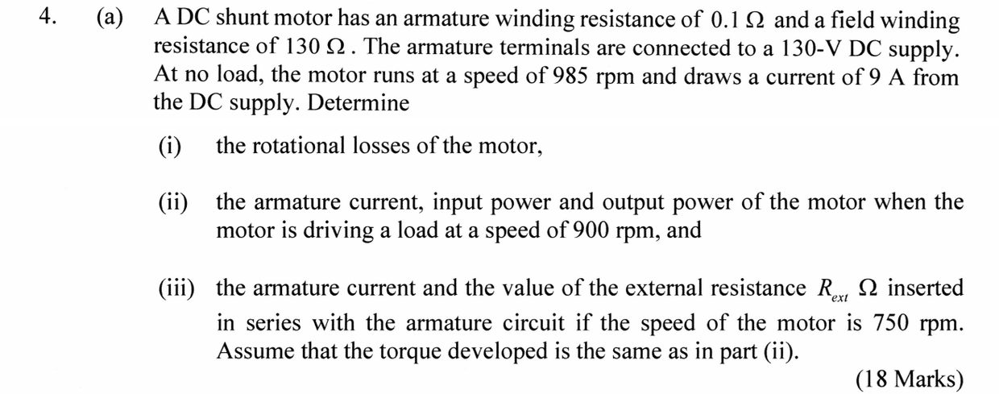
Question: A DC shunt motor has an armature winding resistance of 0.1 Ω and a field winding resistance of 130 Ω. The armature terminals are connected to a 130-V DC supply. At no load, the motor runs at 985 rpm and draws a current of 9 A from the DC supply. Determine (i) the rotational losses of the motor; (ii) the armature current, input power and output power of the motor when it is driving a load at a speed of 900 rpm; (iii) the armature current and the value of the external resistance Rext inserted in series with the armature circuit if the speed of the motor is 750 rpm, assuming the torque developed is the same as in part (ii). (18 marks)
What is it really asking? A shunt motor has its field winding connected straight across the supply, so the field current and the flux are fixed by the supply voltage, whatever the load. What changes with load is the armature current. The no-load test is a trick: with nothing on the shaft, the only mechanical power being "burnt" is friction, windage and core loss. That gives the rotational loss, which we then reuse in the other parts.
| VT | terminal (supply) voltage, 130 V. |
|---|---|
| IF | field current. In a shunt motor it depends only on VT and RF, so it stays constant (and so does the flux) as the load changes. |
| IL, IA | line current drawn from the supply and armature current. The line current splits: IL = IA + IF. |
| EA | back-EMF: the voltage generated by the spinning armature that "pushes back" against the supply. Proportional to flux × speed. |
| Pdev | electrical power converted to mechanical power: EAIA. |
| Prot | rotational losses: friction, windage and core loss. Taken as constant in these questions. |
Step 1 — (i) rotational losses from the no-load test. With no load, the 9 A from the supply splits into the field current and the (small) armature current.
Prot = Pdev,no-load = EA0IA0 = 129.2 × 8 = 1033.6 W (≈ 1034 W)
Why this works: at no load there is no output power, so everything converted (EAIA) is eaten by friction, windage and core loss. (Cross-check from the input side: 130 × 9 = 1170 W in, minus armature copper 8²(0.1) = 6.4 W, minus field copper 1²(130) = 130 W = 1033.6 W ✓.)
Step 2 — (ii) the new operating point at 900 rpm. The field current is still 1 A, so the flux is the same as at no load. The back-EMF is therefore proportional to speed alone.
IA = (VT − EA)/RA = (130 − 118.05)/0.1 = 119.5 A IL = 119.5 + 1 = 120.5 A
Pdev = EAIA = 118.05 × 119.49 = 14 106 W Pout = 14 106 − 1034 = ≈ 13 073 W (≈ 13.1 kW)
Step 3 — (iii) series resistor at the same torque and 750 rpm. Torque = Kφ·IA. The field is untouched (the armature resistor is in the armature branch only), so Kφ is the same, and "same torque" therefore means the same armature current: IA = 119.5 A. At 750 rpm, the back-EMF is lower:
VT = EA3 + IA(RA + Rext) ⇒ RA + Rext = (130 − 98.38)/119.49 = 0.2647 Ω
Rext = 0.2647 − 0.1 = 0.165 Ω
Second route. Kφ = EA0/ω0 = 129.2/103.15 = 1.2526 V·s/rad; T in (ii) = Kφ IA = 149.7 N·m = Pdev/ω = 14 106/94.25 ✓. At 750 rpm and the same T: Pdev = 149.67 × 78.54 = 11 755 W = EA3IA = 98.38 × 119.49 ✓ (equal torque means Pdev ∝ n: 14 106 × 750/900 = 11 755 W).
Sanity check. The armature current is the same in (ii) and (iii), so the input power is the same (15 664 W), but the output power has dropped to 11 755 − 1034 = 10 722 W; the "missing" power is burnt in Rext: 119.49²(0.1647) = 2351 W. Slowing down with a series resistor is therefore easy but wasteful.
Notes to write down
- No-load test: Prot = EA0IA0 with IA0 = IL,nl − IF. Do not forget to subtract IF from the supply current.
- Shunt motor with VT fixed: IF constant, so EA ∝ n. New speed → new EA → IA = (VT − EA)/RA.
- Equal torque and unchanged field ⇒ equal armature current (T = Kφ IA). Then Rtotal = (VT − EA,new)/IA and Rext = Rtotal − RA.
- Trap: Pin = VTIL (including the field current), whereas Pdev = EAIA. Assume Prot is constant (the no-load value) when the speed changes slightly, as the question implies.
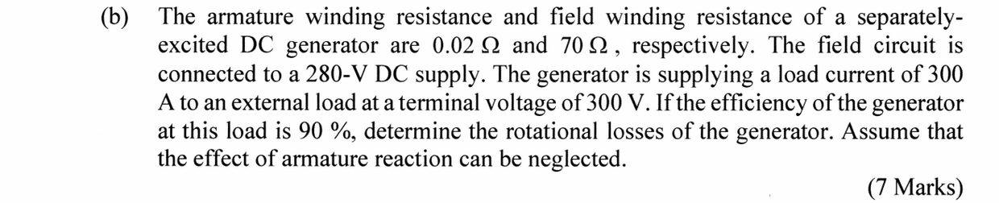
Question: The armature winding resistance and field winding resistance of a separately-excited DC generator are 0.02 Ω and 70 Ω respectively. The field circuit is connected to a 280-V DC supply. The generator is supplying a load current of 300 A to an external load at a terminal voltage of 300 V. If the efficiency of the generator at this load is 90 %, determine the rotational losses of the generator. Assume that the effect of armature reaction can be neglected. (7 marks)
What is it really asking? We know what comes out (electrical power to the load) and, through the efficiency, what must go in. The difference between the two is all the losses. Some of those losses we can compute directly (armature copper and field supply); whatever is left over must be the rotational loss.
Step 1 — output power and total input power.
| Pout | electrical power delivered to the external load. |
|---|---|
| Pin | total power supplied to the generator: the mechanical power from the prime mover plus the electrical power into the separately-excited field winding. Following the lecturer's convention for a separately-excited machine, the field supply counts as an input. |
Step 2 — power developed. In a generator, the armature current equals the load current and the internal EMF is higher than the terminal voltage (some voltage is dropped across RA).
| EA | generated (internal) voltage of the armature (V). |
|---|---|
| IA | armature current = load current (300 A), since the field is on its own supply and takes none of it. |
| Pdev | mechanical power converted to electrical in the armature: the output plus the armature copper loss (90 000 + 1800 = 91 800 W ✓). |
Step 3 — field supply power. IF = VF/RF = 280/70 = 4 A, so PF = VFIF = 280 × 4 = 1120 W.
Step 4 — find the rotational loss by subtraction. The prime mover's shaft power is Pshaft = Pin − PF = 100 000 − 1120 = 98 880 W. Of that, Pdev reaches the armature winding; the rest is lost in friction, windage and core:
Sanity check. The losses add up: 1800 (armature Cu) + 1120 (field) + 7080 (rotational) = 10 000 W = 100 000 − 90 000 ✓. Interpretation used: the field supply is counted as part of the input, as in the lecturer's separately-excited efficiency convention. If a grader instead counts only the mechanical shaft input (field supply not included), the answer becomes 100 000 − 91 800 = 8200 W; state your convention clearly.
Notes to write down
- Generator: EA = VT + IARA (motor is the reverse: EA = VT − IARA). Pdev = EAIA.
- Separately-excited generator: Pin = Pshaft + VFIF = Pdev + Prot + VFIF; η = VTIL/Pin. So Prot = Pout/η − Pdev − VFIF.
- Trap: the field current is not part of the load current. For a separately-excited generator IA = IL (unlike the shunt generator, where IA = IL + IF).
- Check by adding all the losses and seeing that they equal Pin − Pout.
📄 Paper 6 — 2025-2026 Semester 2
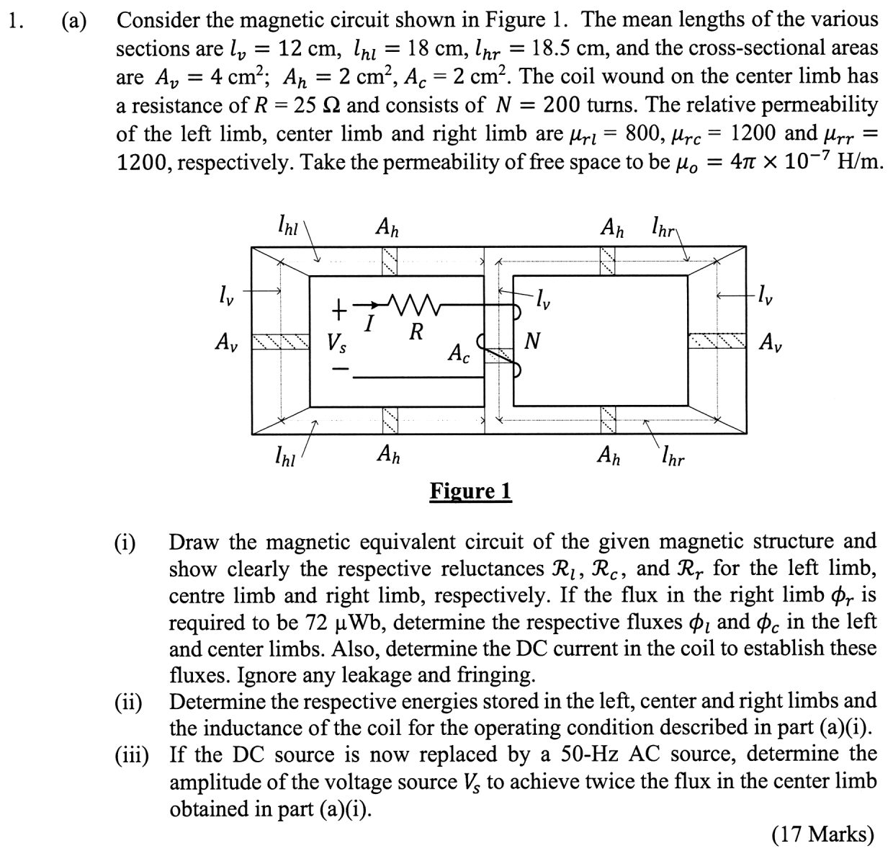
Question: A double-window core has a 200-turn coil (25Ω) on the CENTER limb. Each of the left, center and right limbs is built from a vertical section (l_v=12cm, common to all three) plus, for the OUTER limbs only, top+bottom horizontal yoke sections (l_hl=18cm left, l_hr=18.5cm right). Areas: A_v=4cm² (outer verticals), A_h=2cm² (horizontal yokes), A_c=2cm² (center limb). μᵣ: 800 (left), 1200 (center), 1200 (right). Given the flux in the right limb is 72µWb: find the fluxes in the left and center limbs, the coil current, the energy in each limb, the inductance, and (with 50Hz AC instead) the amplitude of source voltage needed for TWICE the center-limb flux found above.
Step 1 — work out each limb's own reluctance from its actual pieces. The two OUTER limbs (left, right) each combine their own vertical edge with TWO horizontal yoke runs (top and bottom, both the same length on a given side); the CENTER limb is just its own vertical piece, split top and bottom by the coil, so 2×l_v total.
ℛ_center = 2l_v/(μ₀·1200·A_c) ≈ 7.958×10⁵ H⁻¹ ℛ_right = l_v/(μ₀·1200·A_v) + 2l_hr/(μ₀·1200·A_h) ≈ 1.426×10⁶ H⁻¹
ℛ_left∥ℛ_right ≈ 8.474×10⁵ H⁻¹ ℛ_total = ℛ_center+(ℛ_left∥ℛ_right) ≈ 1.643×10⁶ H⁻¹
Step 2 — same left∥right, center-in-series shape as always; start from the given right-limb flux and work outward.
φ_center = φ_left+φ_right ≈ 121.1 µWb F_total = φ_center×ℛ_center+F_lr ≈ 199.1 At I = F_total/N ≈ 0.995 A
Step 3 — energy per limb and inductance, same ½Φ²ℛ formula throughout.
Step 4 — AC, target DOUBLE the center-limb flux from part (a)(i).
I_amplitude = φ_center,target×ℛ_total/N ≈ 1.991 A Vs,amplitude = I_amp×|Z| ≈ 52.0 V
Notes to write down
- When a limb is built from more than one physical piece (e.g. a vertical edge PLUS horizontal yoke sections), its total reluctance is just the sum of each piece's own l/(μ₀μᵣA) — add them exactly like resistors in series, using that specific limb's own μᵣ throughout, since here each of the three limbs had a DIFFERENT μᵣ.
- Even with different μᵣ per limb, the overall solving method (parallel branches share mmf, series branches sum mmf, KCL on flux) is completely unchanged — the only extra work is building each ℛ correctly from its own pieces first.
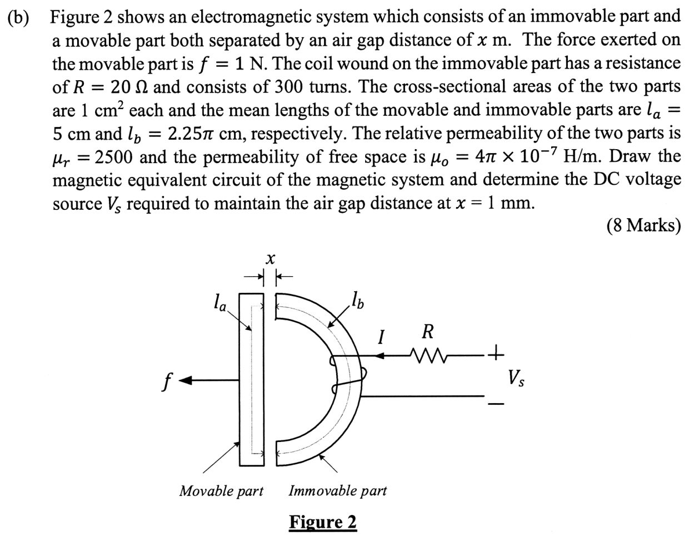
Question: A D-shaped electromagnet (immovable part, mean length 2.25π cm) attracts a flat movable plate (mean length 5cm) across a symmetric double air gap, both parts μᵣ=2500, area 1cm² each. The coil (300 turns, 20Ω) is on the immovable part. Given the force on the movable part is 1N at a gap of 1mm, find the DC supply voltage needed.
Step 1 — this is the same "invert the formula" idea as Paper 2 Q1(b), just starting one step further back (from force, not energy). Build the total reluctance first (movable + immovable core, both finite μᵣ this time, plus the double gap), then invert the double-gap force formula to get flux.
ℛ_gap(x=1mm, double) = 2(0.001)/(μ₀A) ≈ 1.592×10⁷ H⁻¹ ℛ_total ≈ 1.630×10⁷ H⁻¹
Step 2 — invert F=Φ²/(μ₀A) to get the flux the 1N force corresponds to, then work forward normally from there.
Step 3 — DC steady state, so the supply voltage is simply I×R (no back-EMF once current has settled).
Notes to write down
- A "given force, find voltage" question is just the whole normal force-problem chain run backward: F→Φ (invert F=Φ²/(μ₀A) for a double gap), then Φ→mmf→I the normal way, then I→V via Ohm's Law at DC steady state.
- An odd-looking length like "2.25π cm" is usually a strong hint the piece is a semicircular arc (arc length = radius×π for a half-circle) — it doesn't change the reluctance formula at all, it's just a length like any other once converted to metres.
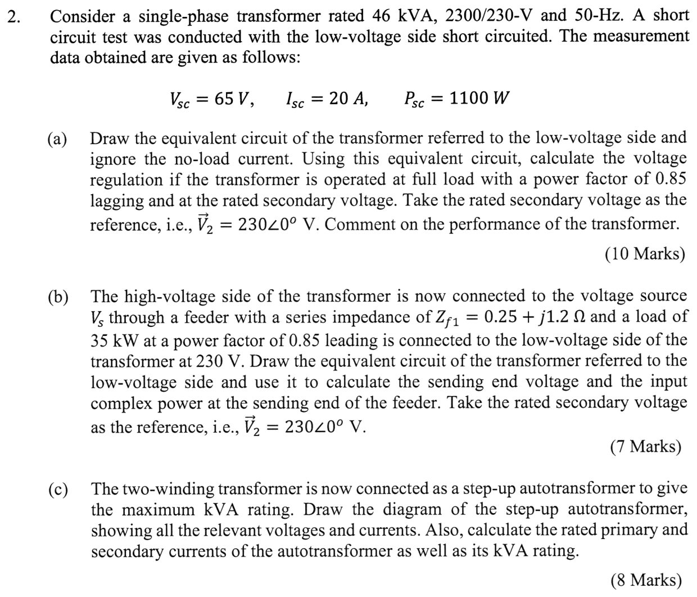
Question: A 46kVA, 2300/230V transformer has SC test data (LV side shorted, so measured on HV side): Vsc=65V, Isc=20A, Psc=1100W. (a) Find VR at full load, 0.85PF lagging, rated secondary voltage, referred to the LV side; comment on performance. (b) The HV side connects to a source through a feeder (Zf1=0.25+j1.2Ω), supplying a 35kW, 0.85PF LEADING load at 230V on the LV side. Find the sending-end voltage and input complex power. (c) Connected as a step-up autotransformer for the MAXIMUM kVA rating: find that rating.
Step 1 — SC test on the HV side gives Re1,Xe1 directly; refer down to LV for part (a).
a=10 → Re2=0.0275Ω, Xe2≈0.01732Ω
Step 2 — full-load VR referred LV.
Comment: a VR around 3% at 0.85PF lagging is a normal, healthy result for a distribution-class transformer this size — the secondary sags by only about 3% under full rated load, well within the sort of range that keeps connected equipment operating within its normal voltage tolerance.
Step 3 (b) — bring the feeder impedance into the SAME referred frame as the transformer's own impedance before combining them. The feeder physically sits on the HV side, so its ohms need dividing by a²=100 to join the LV-referred transformer impedance.
Step 4 — set up the load current (LEADING this time — current leads voltage), then add the total impedance drop.
Step 5 — complex power at the sending end is the same number whether computed in actual or referred units, as long as V and I are referred to the SAME side consistently.
Step 6 (c) — additive autotransformer, boosting 2300V by the 230V winding, gives the maximum possible kVA rating from this pair of windings (same reasoning as Paper 5 Q2(c)).
Notes to write down
- Before combining a feeder's impedance with a transformer's own equivalent-circuit impedance, make sure BOTH are referred to the same side — the feeder is almost always given in the ACTUAL ohms of whichever side it physically sits on, not pre-referred.
- Complex power S=V×conj(I) can be computed in EITHER actual or consistently-referred units and gives the identical answer — this is a useful shortcut so you don't have to convert back to actual HV units just to report the sending-end power.
- A leading-PF load can make the sending-end voltage barely rise above the load voltage even across a whole feeder plus a transformer — worth comparing against Paper 1 Q2's near-zero-VR leading-PF result to see the same effect at play twice in this practice set.
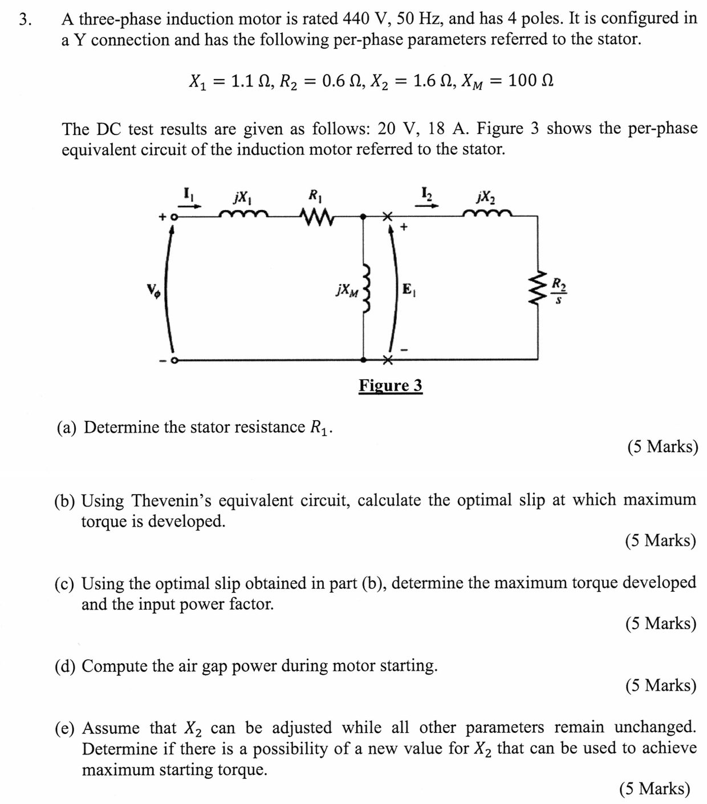
Question (25 marks, five 5-mark parts on one motor): A three-phase induction motor is rated 440 V, 50 Hz, 4 poles, Y-connected, with per-phase parameters referred to the stator X1 = 1.1 Ω, R2 = 0.6 Ω, X2 = 1.6 Ω, XM = 100 Ω. The DC test gave 20 V, 18 A. Figure 3 is the per-phase equivalent circuit: Vφ in series with jX1 and R1, then jXM across the air-gap emf E1, then jX2 in series with R2/s. (a) Determine the stator resistance R1. (b) Using Thevenin's equivalent circuit, calculate the optimal slip at which maximum torque is developed. (c) Using the optimal slip from (b), determine the maximum torque developed and the input power factor. (d) Compute the air-gap power during motor starting. (e) Assume X2 can be adjusted while all other parameters stay unchanged. Determine whether there is a new value of X2 that achieves maximum starting torque.
What the question is really about. One motor, five questions, and they chain: the DC test gives the one missing number (R1), and then every later part uses the same per-phase circuit. Because the motor is Y-connected at 440 V (line voltage), each phase only sees Vφ = 440/√3 = 254.03 V, and a 4-pole, 50 Hz machine has synchronous speed ns = 120·50/4 = 1500 rpm, i.e. ωs = 2π·1500/60 = 157.08 rad/s. Keep those two numbers handy.
(a) Stator resistance from the DC test (5 marks)
Step 1 — see how the meter is connected. In a DC test, a DC source is put across two of the three stator terminals. With a steady DC current there is no rotating field, no induced rotor emf and no reactance (inductors act like plain wire), so the only thing opposing the current is copper resistance. In a Y-connected stator the current goes in through one phase winding and out through another, so the meter sees two phase resistances in series.
| Vdc, Idc | DC voltage (20 V) and DC current (18 A) measured across two stator terminals. |
|---|---|
| R1 | Resistance of ONE stator phase winding, in Ω. It is what Figure 3 calls R1. |
| the 2 | Two phases in series in a Y. (For a Δ-connected stator the measured path is one phase in parallel with two in series = 2R1/3, giving R1 = 1.5 Vdc/Idc. Always check the connection first.) |
Sanity check. Vdc/Idc = 1.111 Ω, and one phase must be half of that. A stator resistance around half an ohm for a 440 V motor of this size (the current drawn at standstill is about 87 A) is sensible, and much smaller than the reactances.
(b) Optimal slip using the Thevenin equivalent (5 marks)
Step 1 — why Thevenin? The torque depends on the power crossing the air gap into the rotor branch (R2/s + jX2). Everything on the left of that branch (source Vφ, R1, jX1 and the shunt jXM) can be replaced by a single source Vth with one series impedance Zth. Then the circuit is just one loop, and the maths for "which slip gives the biggest torque" becomes simple.
smax = R2 / √( Rth² + (Xth + X2)² )
| Vth | Open-circuit voltage the rotor branch "sees": the part of Vφ left over after dividing between the stator impedance and the big magnetising reactance (a voltage divider), in V per phase. |
|---|---|
| Zth | The stator branch (R1 + jX1) in parallel with jXM, with the source shorted: the series impedance in the Thevenin loop, in Ω. |
| smax | The slip at which torque peaks. Torque ∝ I2²R2/s; as slip falls the resistor R2/s rises (less current but more of it is "useful"), and the peak occurs where R2/s equals the magnitude of all the other impedance in the loop. Valid for a Thevenin loop with fixed Vth, any R1. |
Step 2 — numbers. R1 + j(X1 + XM) = 0.5556 + j101.1, magnitude 101.10 Ω.
Zth = j100(0.5556 + j1.1)/(0.5556 + j101.1) = (−110 + j55.56)/(0.5556 + j101.1) = 0.5435 + j1.0910 Ω
Xth + X2 = 1.0910 + 1.6 = 2.6910 Ω √(0.5435² + 2.6910²) = √7.537 = 2.7454 Ω
smax = 0.6 / 2.7454 = 0.2186 (about 21.9 %, rotor speed 1500(1 − 0.2186) ≈ 1172 rpm)
Sanity check. Zth should look like the stator branch R1 + jX1 = 0.556 + j1.1 shaved slightly by the shunt XM (because XM is so large, XM/(X1+XM) ≈ 0.99): 0.54 + j1.09 fits. And Vth ≈ Vφ (251 vs 254) because almost no voltage is lost across the small stator impedance.
(c) Maximum torque and input power factor (5 marks)
| Tmax | Pull-out (breakdown) torque in N·m: the most torque the motor can produce at this voltage. It does not depend on R2; changing R2 only moves where it occurs. |
|---|---|
| 3 | Three phases, each carrying the same per-phase power. |
| ωs | Synchronous speed in rad/s (157.08). Torque = air-gap power / ωs, because the air-gap power is carried by the rotating field. |
| Zin | Total impedance seen by the source, R1 + jX1 + jXM ∥ (R2/s + jX2). Its angle is the angle between Vφ and I1, so pf = cos(angle), lagging because the angle is positive (inductive). |
Step 1 — Tmax.
Step 2 — input power factor. At smax the rotor resistor is R2/s = 0.6/0.2186 = 2.7454 Ω (it happens to equal the square-root term; that is the definition of smax). Now use the FULL circuit, not the Thevenin one, because the pf is measured at the real source:
Zin = (0.5556 + j1.1) + (2.658 + j1.647) = 3.213 + j2.747 Ω = 4.227∠40.52° Ω
I1 = 254.03 / 4.227 = 60.10 A pf = cos 40.52° = 0.760 lagging
Step 3 — cross-check by a second route. The rotor current is I2 = Vth/[(Rth + R2/s) + j(Xth + X2)] = 251.27/|3.289 + j2.691| = 59.13 A, so Pag = 3(59.13)²(2.7454) = 28.79 kW and T = 28 795/157.08 = 183.3 N·m ✓. The input route agrees too: Pin = 3(254.03)(60.10)(0.760) = 34.81 kW, minus Pcu1 = 3(60.10)²(0.5556) = 6.02 kW gives 28.79 kW ✓. (A numerical scan of the torque curve also peaks at 183.3 N·m at s = 0.2186.)
What it means. The pull-out torque (183 N·m) is large, but running there the motor draws 60 A at a poor pf of 0.76 and wastes 22 % of the air-gap power as rotor heat. That is why motors normally run at slip of a few percent, well to the right of the torque peak on the stable side.
(d) Air-gap power at starting (5 marks)
Step 1 — what "starting" means in the circuit. At the instant of starting the rotor is stationary: n = 0 so s = 1. The load resistor R2/s collapses to just R2 = 0.6 Ω, the rotor branch is a low impedance and the motor behaves like a short-circuited transformer.
| Pag | Air-gap power: the power that crosses from stator to rotor, in W, = power dissipated in R2/s in the three phases. |
|---|---|
| I2 | Rotor current referred to the stator, in A per phase. Only part of I1 goes into the rotor; the rest goes into the magnetising branch (current divider). |
| R2/s | 0.6/1 = 0.6 Ω at standstill. |
Step 2 — solve the circuit at s = 1.
Zin = (0.5556 + j1.1) + (0.5812 + j1.5782) = 1.1368 + j2.6782 Ω = 2.909∠67.0° Ω
I1 = 254.03 / 2.909 = 87.31 A I2 = 87.31 × 100/|0.6 + j101.6| = 87.31 × 0.9843 = 85.94 A (current-divider factor 0.984)
Pag,start = 3(85.94)²(0.6) = 13.29 kW (starting torque = 13 293/157.08 = 84.6 N·m)
Step 3 — cross-checks. (i) Using the Thevenin loop from (b): I2 = 251.27/|(0.5435 + 0.6) + j2.691| = 251.27/2.924 = 85.94 A ✓. (ii) From the input side: Pin = 3(254.03)(87.31)(cos 67.0° = 0.391) = 26.00 kW and Pcu1 = 3(87.31)²(0.5556) = 12.71 kW, so Pin − Pcu1 = 13.29 kW ✓.
What it means. At s = 1, Pdev = (1 − s)Pag = 0, so ALL the air-gap power is rotor copper loss, turned straight into heat. The starting current (87 A) is about 1.5 times the current at maximum torque, and the starting pf is only 0.39 lagging.
(e) Can X2 be changed to give maximum starting torque? (5 marks)
Step 1 — turn "maximum starting torque" into a condition. The torque peak sits at smax = R2/√(Rth² + (Xth + X2)²). The torque at standstill equals the peak torque only if the peak is AT standstill, i.e. smax = 1.
Xth + X2 = 0.2541 Ω ⇒ X2 = 0.2541 − 1.0910 = −0.837 Ω
Step 2 — interpret. X2 is the leakage reactance of a rotor winding: an inductance, so X2 ≥ 0 always. A negative value would be a capacitor, which a rotor winding cannot provide. So no: there is no physically possible X2 that gives maximum starting torque. The reason is that Xth = 1.091 Ω on its own is already too big: even with X2 = 0, smax = 0.6/√(0.5435² + 1.091²) = 0.49, which is still less than 1.
Step 3 — what X2 does do (second route). Starting torque Tst = 3Vth²R2/{ωs[(Rth + R2)² + (Xth + X2)²]} only ever falls as X2 rises: 84.6 N·m at X2 = 1.6 Ω, 127 N·m at 1.0 Ω, 265 N·m at 0.1 Ω, at best 289.6 N·m at X2 = 0. Even that best case is below that motor's own Tmax (≈ 342 N·m for X2 = 0). Reducing X2 helps the starting torque but never makes it a maximum. The practical way to get maximum starting torque is to raise R2 (a wound-rotor motor with external resistance): R2,total = √(Rth² + (Xth + X2)²) = 2.745 Ω, i.e. Rext ≈ 2.145 Ω with the original X2 = 1.6 Ω.
Notes to write down
- DC test on a Y stator: R1 = Vdc/(2Idc) (two phases in series). For a Δ stator it is 1.5Vdc/Idc. Trap: reporting V/I (1.11 Ω) as R1.
- Thevenin: Vth = VφXM/|R1 + j(X1 + XM)|, Zth = jXM(R1 + jX1)/(R1 + j(X1 + XM)), smax = R2/√(Rth² + (Xth + X2)²) = 0.2186, Tmax = 3Vth²/(2ωs[Rth + √(…)]) = 183.3 N·m. Use Vφ = VL/√3 and ωs (not the rotor speed) in the torque formula.
- Power factor and current need the FULL circuit Zin at smax (pf = 0.760 lagging, I1 = 60.1 A), not the Thevenin loop.
- At start s = 1, Pag = 3I2²R2 = 13.3 kW, all lost as rotor heat. Maximum starting torque needs smax = 1; here that would need X2 = −0.837 Ω, impossible, so the answer to (e) is "no" (use extra rotor resistance instead).
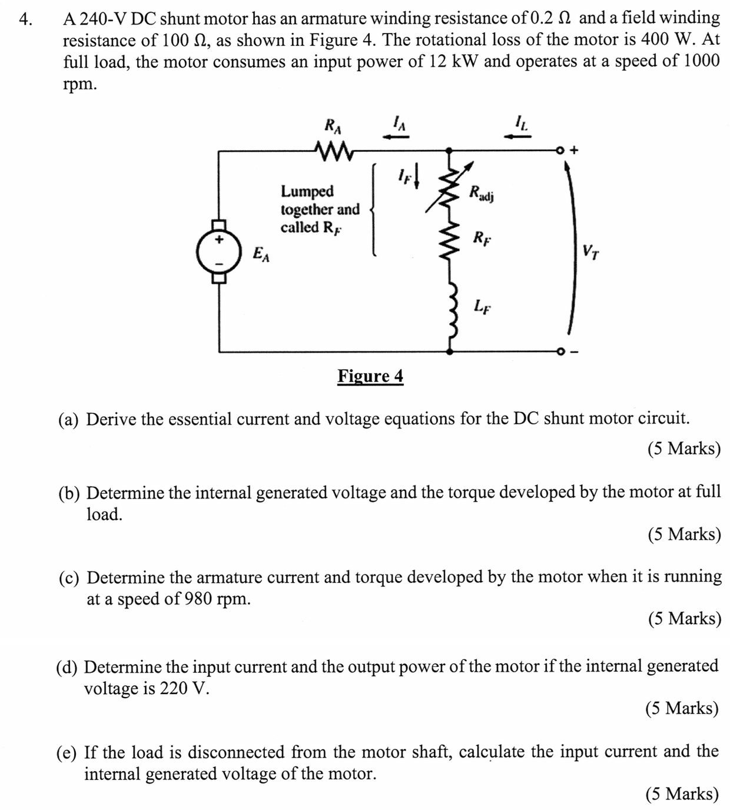
Question (25 marks, five 5-mark parts on one motor): A 240-V DC shunt motor has armature winding resistance RA = 0.2 Ω and field winding resistance RF = 100 Ω (Figure 4: armature EA in series with RA, field branch Radj + RF + LF lumped together and called RF, in parallel with the armature across VT; currents IA, IF, IL are drawn into the motor). The rotational loss is 400 W. At full load the motor consumes an input power of 12 kW and runs at 1000 rpm. (a) Derive the essential current and voltage equations for the DC shunt motor circuit. (b) Determine the internal generated voltage and the torque developed at full load. (c) Determine the armature current and torque developed when the motor runs at 980 rpm. (d) Determine the input current and the output power if the internal generated voltage is 220 V. (e) If the load is disconnected from the shaft, calculate the input current and the internal generated voltage.
What the question is really about. It is the standard shunt-motor ladder: first the circuit equations, then one operating point at which everything can be found (full load), and then every other operating point is reached by changing ONE thing and scaling. The key physical fact is that the field winding is wired straight across the supply, so IF = VT/RF never changes while VT is fixed, which means the flux φ never changes (no armature reaction assumed, and no saturation issues arise because nothing alters IF). So EA ∝ speed and torque ∝ IA throughout.
(a) Essential equations (5 marks)
Step 1 — current equation (KCL). The line current IL arrives at the top node and splits: one branch feeds the field winding, the other feeds the armature, so IL = IA + IF.
Step 2 — voltage equations (KVL). The field branch is directly across the terminals. At DC steady state the inductance LF acts like a plain wire (no voltage across it), so only the resistance counts. Radj is included in the lumped RF. The armature loop is: supply voltage = back-emf + resistive drop.
EA = Kφωm Tdev = KφIA Pdev = EAIA = Tdevωm Pout = Pdev − Prot
| VT | Terminal (supply) voltage, 240 V, across both branches. |
|---|---|
| IL, IA, IF | Line (input), armature and field currents, in A. A motor draws power, so all three arrows point into the machine. |
| EA | Internal generated (back) emf in V. The armature conductors cut the field flux as they turn, so the motor is also a generator, and its emf OPPOSES the supply: that is why the voltage equation has EA subtracted from VT. |
| K, φ, ωm | K is a constant of the winding and poles, φ is the flux per pole (set by IF), ωm = 2πn/60 is the shaft speed in rad/s. |
| Tdev | Torque developed (internal). The shaft torque delivered to the load is a bit smaller, Tload = Pout/ωm, because rotational losses Prot take some power. |
The two power equations also follow from the first two: multiply VT = EA + IARA by IA to get VTIA = EAIA + IA²RA: electrical power into the armature = mechanical power developed + copper loss.
(b) EA and torque at full load (5 marks)
Step 1 — the order of attack. The input power gives IL. The field gives IF. Subtract to get IA. Then EA, then Pdev, then torque.
EA = 240 − 47.6(0.2) = 240 − 9.52 = 230.48 V
Pdev = EAIA = 230.48 × 47.6 = 10 970.8 W ωm = 2π(1000)/60 = 104.72 rad/s
Tdev = Pdev/ωm = 10 970.8/104.72 = 104.76 N·m (Kφ = 230.48/104.72 = 2.2009 V·s/rad; check T = KφIA = 2.2009 × 47.6 = 104.76 ✓)
Sanity check (loss budget). Pout = 10 970.8 − 400 = 10 571 W (Tload = 100.9 N·m, η = 88.1 %). Losses: IA²RA = 453.2 W, IF²RF = 576 W, Prot = 400 W, total 1429.2 W, and 12 000 − 10 570.8 = 1429.2 ✓. Trap: the question asks for the torque DEVELOPED, so use Pdev, not Pout.
(c) Armature current and torque at 980 rpm (5 marks)
Step 1 — what stays the same. VT is fixed so IF = 2.4 A and the flux are unchanged. Then EA = Kφωm is directly proportional to speed.
IA2 = (VT − EA2)/RA = (240 − 225.87)/0.2 = 14.13/0.2 = 70.65 A (IL = 73.05 A)
T2 = Kφ IA2 = 2.2009 × 70.648 = 155.5 N·m
Step 2 — second route (scaling). With constant flux T ∝ IA: T2 = 104.76 × (70.648/47.6) = 155.49 N·m ✓. Or directly: T = EA2IA2/ωm2 = 225.87 × 70.648/102.63 = 155.49 N·m ✓ (ωm2 = 2π·980/60 = 102.63 rad/s).
What it means. Just a 2 % drop in speed raises the armature current by almost 50 % (47.6 → 70.6 A) and torque by the same factor. The armature resistance is tiny, so a small change in the back-emf produces a large change in current. That is the self-regulating action that keeps the shunt motor speed nearly constant under changing load.
(d) Input current and output power when EA = 220 V (5 marks)
Step 1 — EA is given, so work backwards from the voltage equation.
IL = IA + IF = 100 + 2.4 = 102.4 A (input power 240 × 102.4 = 24.58 kW)
Pdev = EAIA = 220 × 100 = 22 000 W Pout = Pdev − Prot = 22 000 − 400 = 21 600 W (21.6 kW)
Sanity check. Because flux is constant, EA = 220 V corresponds to a speed of 1000 × 220/230.48 = 954.5 rpm, below full-load speed, so the motor is heavily overloaded: about twice the full-load output (10.6 kW) at an efficiency of 21 600/24 576 = 87.9 %. Torque developed = 22 000/(2π·954.5/60) = 220.1 N·m, which is 100/47.6 = 2.1 times the full-load value ✓ (equal to the current ratio).
(e) Load disconnected: input current and EA (5 marks)
Step 1 — what "no load" tells us. With the load removed the shaft delivers no output: Pout = 0. The motor still has to turn itself, so it develops just enough power to cover the rotational loss: Pdev = Prot = 400 W. That fixes IA through a quadratic.
IA = [240 ± √(240² − 4(0.2)(400))]/(2 × 0.2) = [240 ± 239.33]/0.4 ⇒ IA = 1.669 A (or 1198 A)
The large root, 1198 A, would be the stalled-motor current, which is absurd for a motor spinning freely, so take the small root. As a check, since IARA is tiny, IA ≈ Prot/VT = 400/240 = 1.667 A ✓.
What it means. At no load the back-emf has almost climbed to the supply voltage (239.67 V), so the armature current is tiny. Using constant flux, the no-load speed is 1000 × 239.67/230.48 = 1040 rpm, about 4 % above the full-load speed: that is the speed regulation of this shunt motor. Of the 4.07 A drawn, most (2.4 A) is just the field current.
Notes to write down
- Shunt-motor ladder: IF = VT/RF (fixed), IA = IL − IF, EA = VT − IARA, Pdev = EAIA, T = Pdev/ωm. Here: EA = 230.48 V, T = 104.8 N·m at full load.
- With VT fixed the flux is constant: EA ∝ n and T ∝ IA. To change speed, scale EA, then IA = (VT − EA)/RA (980 rpm gives 70.65 A and 155.5 N·m).
- Trap: "torque developed" uses Pdev; "output (shaft) torque" uses Pout = Pdev − Prot. Also the input current is IL = IA + IF, so never forget the 2.4 A of field current.
- No load means Pout = 0, so Pdev = Prot = (VT − IARA)IA. Solve the quadratic and take the SMALL root (1.669 A); then EA = 239.67 V and IL = 4.07 A.
How Q3 and Q4 fit in
Q3 (induction motors) and Q4 (DC machines) now sit at the end of each paper's section, after Q1 and Q2, and use the methods on the AC Machines and DC Machines concept pages. Same rules as above: no printed answer key exists, so every number was solved from the scan, re-derived by a second route in Python, and compared with the typed solutions on By Topic. Where an exam question lets you choose a convention (for example whether the field supply counts as input power in a separately-excited generator's efficiency), the entry says which one it used and gives the other figure too. Paper 6's Q3 and Q4 are worked as one chained block each, because their parts share one data set.